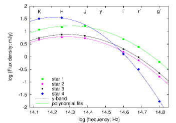
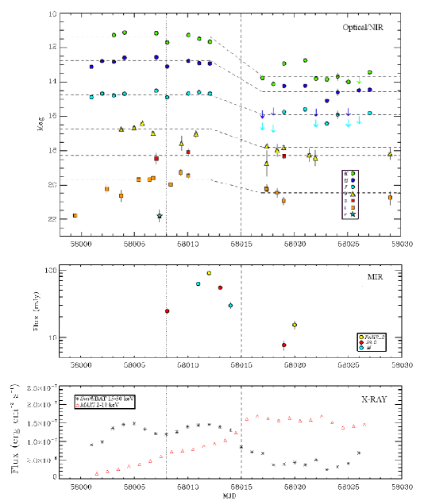
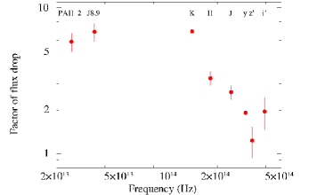
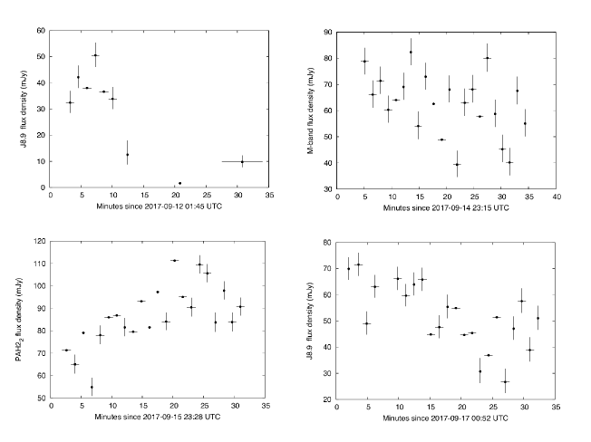
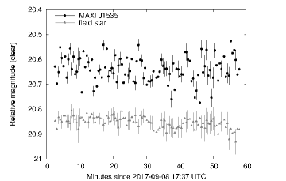
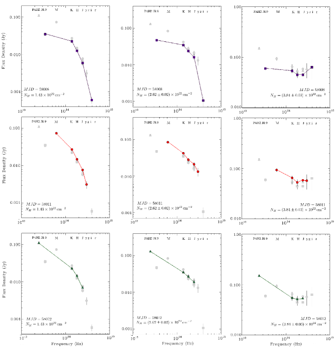
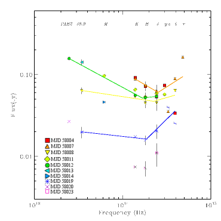
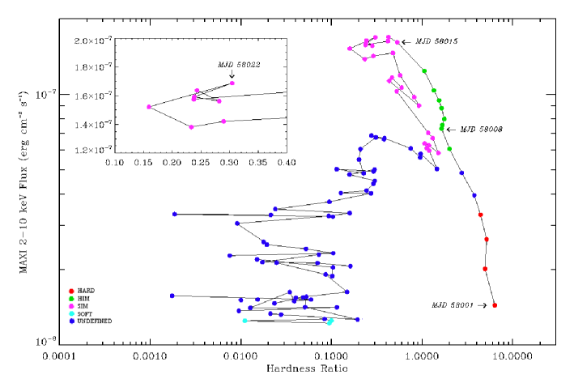

نفاثة شديدة التذبذب في ثنائي الأشعة السينية للثقب الأسود MAXI J1535–571
الملخص
نقدم نتائج رصدات بصرية، وقريبة من الأشعة تحت الحمراء (NIR)، ومتوسطة من الأشعة تحت الحمراء، للثنائي السيني المرشح لاحتواء ثقب أسود (BHB) MAXI J1535–571 أثناء اندلاعه في 2017/2018.
خلال الجزء الأول من الاندلاع (MJD 58004-58012)، أظهر المصدر طيفا بصريا-قريبا من تحت الأحمر يتسق مع قانون قوة سنكروتروني رقيق بصريا صادر عن نفاثة. غير أن المصدر خبا بعد MJD 58015 خفوتا كبيرا، وكان انخفاض الفيض أوضح بكثير عند الترددات الأدنى. وقبل هذا الخفوت نقيس كثافة فيض مصححة من الاحمرار مقدارها  100 mJy في نطاق تحت الأحمر المتوسط، مما يجعل MAXI J1535–571 أحد أسطع الثنائيات السينية الحاوية لثقوب سوداء المعروفة حتى الآن في تحت الأحمر المتوسط. ويظهر تليّن مهم في طيف الأشعة السينية متزامنا مع خفوت تحت الأحمر. نفسر ذلك بأنه ناجم عن كبح انبعاث النفاثة، على غرار اقتران التراكم-القذف المرصود في ثنائيات BHB أخرى. ومع ذلك، لم ينتقل MAXI J1535–571 بسلاسة إلى الحالة اللينة، بل أظهر انحرافات في صلادة الأشعة السينية مرتبطة بتوهجات تحت حمراء. كما نقدم أول دراسة لتغيرية ثنائي BHB في تحت الأحمر المتوسط على مقاييس زمنية قدرها دقائق، مع تغيرية كسرية للجذر المتوسط التربيعي في منحنيات الضوء مقدارها –22 %، وهي مشابهة لما يتوقعه نموذج النفاثة ذي الصدمات الداخلية، وأعلى بكثير من قيمة rms الكسرية البصرية ( %).
تمثل هذه النتائج حالة ممتازة للتوقيت الطيفي متعدد الأطوال الموجية للنفاثات، وتبيّن كيف يمكن للبيانات الغنية متعددة الأطوال الموجية والمحلولة زمنيا للثنائيات السينية عبر انتقالات حالة التراكم أن تساعد على تحسين نماذج ارتباط القرص بالنفاثة وإطلاق النفاثات في هذه الأنظمة.
100 mJy في نطاق تحت الأحمر المتوسط، مما يجعل MAXI J1535–571 أحد أسطع الثنائيات السينية الحاوية لثقوب سوداء المعروفة حتى الآن في تحت الأحمر المتوسط. ويظهر تليّن مهم في طيف الأشعة السينية متزامنا مع خفوت تحت الأحمر. نفسر ذلك بأنه ناجم عن كبح انبعاث النفاثة، على غرار اقتران التراكم-القذف المرصود في ثنائيات BHB أخرى. ومع ذلك، لم ينتقل MAXI J1535–571 بسلاسة إلى الحالة اللينة، بل أظهر انحرافات في صلادة الأشعة السينية مرتبطة بتوهجات تحت حمراء. كما نقدم أول دراسة لتغيرية ثنائي BHB في تحت الأحمر المتوسط على مقاييس زمنية قدرها دقائق، مع تغيرية كسرية للجذر المتوسط التربيعي في منحنيات الضوء مقدارها –22 %، وهي مشابهة لما يتوقعه نموذج النفاثة ذي الصدمات الداخلية، وأعلى بكثير من قيمة rms الكسرية البصرية ( %).
تمثل هذه النتائج حالة ممتازة للتوقيت الطيفي متعدد الأطوال الموجية للنفاثات، وتبيّن كيف يمكن للبيانات الغنية متعددة الأطوال الموجية والمحلولة زمنيا للثنائيات السينية عبر انتقالات حالة التراكم أن تساعد على تحسين نماذج ارتباط القرص بالنفاثة وإطلاق النفاثات في هذه الأنظمة.
1 مقدمة
الثنائيات السينية منخفضة الكتلة (LMXBs) هي أنظمة تستضيف عادة نجما متطورا أو من نجوم النسق الرئيسي، وجسما مدمجا يكون إما نجما نيوترونيا (NS) أو ثقبا أسود (BH). تنقل النجمة المرافقة في هذه الأنظمة الكتلة والزخم الزاوي نحو الجسم المدمج عبر فيضان فص روش وتشكّل قرص تراكم. وقد تكون LMXBs عابرة، أي إنها تتناوب بين اندلاعات تدوم عادة أسابيع إلى أشهر، تصل فيها ضيائية الأشعة السينية إلى وتكون مستويات التراكم مرتفعة، وفترات أطول (سنوات/عقود) من السكون، مع انخفاض نموذجي في ضيائية الأشعة السينية بمقدار 5-6 مراتب مقدار.
يُعتقد أن اقترانا بين تراكم المادة وقذفها موجود في LMXBs (Merloni et al. 2003; Falcke et al. 2004; Plotkin et al. 2013). وتُرى هذه القذوف أساسا على هيئة نفاثات موازاة ومضغوطة تنبعث من منطقة قريبة جدا من الجسم المدمج المركزي.
ويعد إنتاج النفاثات النسبية في الثنائيات السينية الحاوية لثقوب سوداء (BHBs) موضوع دراسة واسعة في مجال الأنظمة المتراكمة.
يُعتقد أن المجال المغناطيسي في الجزء الداخلي من تدفق التراكم مسؤول عن تسريع الجسيمات وإطلاق النفاثات. وفي حالة انبعاث النفاثة، يرصد عادة طيف راديوي مسطح عندما يكون النظام في حالته الصلبة في الأشعة السينية (Fender 2001; Fender et al. 2004; Corbel et al. 2004). ويعد هذا الطيف المسطح أو المقلوب (، مع ) إحدى العلامات الرئيسة على وجود نفاثة موازاة في BHBs. ويمتد عادة على الأقل إلى نطاق المليمتر، ويفسر غالبا بأنه ناتج عن تراكب مكونات انبعاث سنكروتروني ذاتي الامتصاص تنشأ على مسافات مختلفة من الثقب الأسود المركزي. وعند ترددات أعلى، غالبا بدءا من حزم تحت الأحمر المتوسط (MIR) أو القريب (NIR)، يرصد انبعاث سنكروتروني رقيق بصريا، منتجا قانون قوة بمعامل (Russell et al., 2013a). يحدث الانتقال بين الجزأين السميك والرقيق بصريا من الطيف عند ما يسمى تردد انكسار النفاثة،  ، الذي يقع عادة من MIR إلى NIR (Russell et al., 2013a). أما في الحالة اللينة للأشعة السينية، فيبدو أن النفاثات تخمد عند جميع الترددات (انظر مثلا Russell et al. 2011) لصالح رياح القرص (Ponti et al., 2012)، ويرجح أن ذلك بسبب كبح المجال المغناطيسي الناجم عن قرص التراكم الرقيق هندسيا، الذي يوجد قريبا من الثقب الأسود (انظر مثلا Meier, 2001). وبدلا من ذلك، وبما يتسق مع نموذج الصدمات الداخلية لنفاثات BHBs الذي قدمه Malzac (2013)، قد تبقى النفاثة موجودة أثناء الحالة اللينة، لكنها مظلمة بسبب غياب التغيرية في القرص (Drappeau et al., 2017).
في بعض الحالات، وُجد أن تردد انكسار النفاثة ينتقل من تحت الأحمر إلى ترددات الراديو مع تليّن طيف الأشعة السينية للمصدر، ثم يعود مجددا إلى حزمة تحت الأحمر في نهاية الاندلاع عندما يصبح الطيف أصلب (Russell et al. 2013b; Russell et al. 2014; Diaz Trigo et al. 2018). ويشير هذا السلوك إلى أن بنية تدفق التراكم تحدد موضع تردد انكسار النفاثة.
، الذي يقع عادة من MIR إلى NIR (Russell et al., 2013a). أما في الحالة اللينة للأشعة السينية، فيبدو أن النفاثات تخمد عند جميع الترددات (انظر مثلا Russell et al. 2011) لصالح رياح القرص (Ponti et al., 2012)، ويرجح أن ذلك بسبب كبح المجال المغناطيسي الناجم عن قرص التراكم الرقيق هندسيا، الذي يوجد قريبا من الثقب الأسود (انظر مثلا Meier, 2001). وبدلا من ذلك، وبما يتسق مع نموذج الصدمات الداخلية لنفاثات BHBs الذي قدمه Malzac (2013)، قد تبقى النفاثة موجودة أثناء الحالة اللينة، لكنها مظلمة بسبب غياب التغيرية في القرص (Drappeau et al., 2017).
في بعض الحالات، وُجد أن تردد انكسار النفاثة ينتقل من تحت الأحمر إلى ترددات الراديو مع تليّن طيف الأشعة السينية للمصدر، ثم يعود مجددا إلى حزمة تحت الأحمر في نهاية الاندلاع عندما يصبح الطيف أصلب (Russell et al. 2013b; Russell et al. 2014; Diaz Trigo et al. 2018). ويشير هذا السلوك إلى أن بنية تدفق التراكم تحدد موضع تردد انكسار النفاثة.
يُعتقد أن حجم منطقة إصدار النفاثة يتناسب عكسيا مع التردد (Blandford & Königl, 1979)؛ وبهذه الطريقة، فإن سيعطي معلومات عن حجم قاعدة النفاثة، أي موضع بدء تسريع الجسيمات (Heinz & Sunyaev 2003; Chaty et al. 2011; Ceccobello et al. 2018). علاوة على ذلك، فإن رصد تردد انكسار النفاثة أساسي أيضا لتقدير شدة المجال المغناطيسي والقدرة الكلية للنفاثة وضيائيتها الإشعاعية، وبالتالي لإلقاء الضوء على عملية تكوّن النفاثة وارتباط التدفق الداخل/الخارج في الثنائيات السينية (Russell et al., 2014). وقد رُصد الانكسار في حالات مرشحي الثقوب السوداء GX 339–4 (Corbel & Fender 2002; Gandhi et al. 2011; Corbel et al. 2013)، وXTE J1118+480 (Hynes et al., 2006)، وXTE J1550–564 (Chaty et al., 2011)، وV404 Cyg (Russell et al., 2013a; Tetarenko, 2018)، وMAXI J1836–194 (Russell et al., 2013b, 2014)، وCyg X–1 (Rahoui et al., 2011)، وفي حالة السكون Swift J1357.2–0933 وA0620–00 (Plotkin et al. 2016; Russell et al. 2018; Dinçer et al. 2018) (وكذلك في أنظمة النجوم النيوترونية 4U 0614+091، و4U 1728–34، وAql X–1؛ Migliari et al. 2010، Díaz Trigo et al. 2017، Diaz Trigo et al. 2018).
2 MAXI J1535–571
رُصد BHB المسمى MAXI J1535–571 (ويشار إليه فيما يلي بـ J1535) أول مرة بواسطة نظام تنبيه النوفات MAXI/GSC بوصفه عابرا ساطعا وصلبا في الأشعة السينية في 2 سبتمبر، 2017 (Negoro et al., 2017a). وبصورة مستقلة، حفّزت أداة تلسكوب تنبيه الانفجارات (Swift/BAT) على متن Swift اندلاعا من انفجار أشعة غاما محتمل (Kennea et al. 2017) صادر من الموضع نفسه، مما قاد إلى الاستنتاج بأنهم كانوا يرصدون الحدث نفسه. وكان طيف المصدر ملائما جيدا بقانون قوة ممتص ذي كثافة عمود هيدروجينية ومعامل فوتوني 1.53 0.07 (Kennea et al., 2017).
0.07 (Kennea et al., 2017).
رُصد النظير البصري أول مرة في 3 سبتمبر باستخدام تلسكوب B&C بقطر 0.61m، الذي تديره جامعة Canterbury في مرصد Mt. John في نيوزيلندا، وقد كشف عن مصدر بقدر داخل دائرة الخطأ الخاصة بتلسكوب الأشعة السينية (Swift/XRT) على متن Swift (Scaringi, 2017). ولم يُرصد الهدف عند ترددات أعلى (أي في حزمتَي و)، وهذا غير مفاجئ بسبب الانطفاء العالي في ذلك الموضع من المستوى المجري.
في نطاق 2–20 keV، ازداد فيض الأشعة السينية خطيا عقب الرصد الأول (Negoro et al., 2017b).
ومن رصدات MAXI/GSC الإضافية الواردة في Negoro et al. (2017b)، كان الفيض غير الممتص في نطاق 1–60 keV () يقابل ضيائية مقدارها erg/s بافتراض مسافة 8 kpc، وهي تتجاوز ضيائية إدنغتون لنجم نيوتروني معياري كتلته 1.4 بمقدار عامل . علاوة على ذلك، تُلاحظ تغيرية سريعة في الأشعة السينية بلا دورية واضحة في منحنى ضوء GSC. وبسبب هذه الخصائص المرصودة، اقترح المؤلفون أن المصدر قد يكون ثنائيا سينيا منخفض الكتلة في الحالة الصلبة يستضيف ثقبا أسود.
بمقدار عامل . علاوة على ذلك، تُلاحظ تغيرية سريعة في الأشعة السينية بلا دورية واضحة في منحنى ضوء GSC. وبسبب هذه الخصائص المرصودة، اقترح المؤلفون أن المصدر قد يكون ثنائيا سينيا منخفض الكتلة في الحالة الصلبة يستضيف ثقبا أسود.
أُجريت رصدات باستخدام Australia Telescope Compact Array (ATCA) (Russell et al., 2017b) في 5 سبتمبر، عند 5.5 و9 GHz. ورصد المؤلفون مصدرا راديويا في موضع متسق مع موضع الأشعة السينية، بمعامل طيف راديوي ، وهو متسق مع انبعاث من نفاثة راديوية مدمجة. كما قدّروا مسافة الهدف بنحو 6.5 kpc، بافتراض أن المصدر قريب قدر الإمكان من مركز المجرة على خط البصر نحوه. والانبعاث الراديوي المرصود أعلى بكثير من الضيائية الراديوية المتوقعة لثنائي سيني منخفض الكتلة يحوي نجما نيوترونيا عند ضيائية الأشعة السينية المرصودة، بينما هو قابل للمقارنة مع ضيائيات BHBs النموذجية، مما يشير إلى أن J1535 هو بالفعل مرشح قوي ليكون BHB. ولاحقا، أدى التحليل الطيفي والزمني لبيانات Swift الأرشيفية (BAT وXRT) وMAXI (GSC) الوارد في Shang et al. (2018) إلى تقدير كتلة الثقب الأسود المحتملة بقيمة  .
.
رُصد النظير في NIR بواسطة تلسكوب SMARTS بقطر 1.3m في CTIO بوصفه مصدرا بقدر J=14.88 وH=13.11 mag، في 5 سبتمبر (Dincer, 2017).
كشفت متابعة MAXI/GSC وSwift للاندلاع عن اتجاه تزايد خطي في ضيائية الأشعة السينية مع الزمن، إذ بلغ فيض 2–20 keV قيمة في 10 سبتمبر. وبعد هذا التاريخ، وبينما استمر معدل عدّ MAXI في نطاق 2–4 keV ومعدل عدّ XRT في الازدياد، بدأت معدلات عدّ MAXI في نطاق 10–20 keV وBAT في الانخفاض، في حين أصبح المعامل الفوتوني للأشعة السينية أكثر لينا، مما يشير إلى انتقال محتمل للمصدر من الحالة الصلبة إلى اللينة (Nakahira et al. 2017, Kennea 2017, Palmer et al. 2017).
في 11 سبتمبر، أُجريت رصدات مليمترية باستخدام Atacama Large Millimeter/Sub-millimeter array (ALMA). وقد جعلت رصدات ALMA المأخوذة عند 97 و140 و230 GHz من J1535 أحد أسطع الثنائيات السينية التي رُصدت قط عند أطوال موجية دون مليمترية (Tetarenko et al., 2017). وأكدت رصدات ATCA المنفذة في 12 سبتمبر ازدياد سطوع المصدر في النطاق الراديوي، عند كل من 17 و19 GHz (Tetarenko et al., 2017). وربط المؤلفون هذه الرصود الراديوية بانبعاث سنكروتروني ناشئ عن نفاثة مدمجة، بطيف متسق مع قانون قوة مفرد يمتد من الراديو حتى  140 GHz، على أن الانكسار يقع فوق ذلك.
140 GHz، على أن الانكسار يقع فوق ذلك.
أُبلغ أولا عن تليّن في طيف الأشعة السينية في 19 سبتمبر (MJD 58015) بواسطة Shidatsu et al. (2017a)، مما يشير إلى أن المصدر دخل ما يسمى الحالة اللينة-المتوسطة (Tao et al., 2018). ثم رُصد ازدياد إضافي في السطوع الراديوي بواسطة ATCA في 25 أكتوبر (Russell et al., 2017a)، بطيف راديوي متسق مع قانون قوة مفرد (معامل طيفي )، وهو مجددا دال على انبعاث سنكروتروني من نفاثة مدمجة. وقد أشار ذلك إلى أن المصدر ربما كان ينتقل عائدا نحو الحالة الصلبة.
أبلغ Shidatsu et al. (2017b) عن تليّن طيفي مستمر للمصدر بعد 25 أكتوبر، بلغ نسبة صلادة لفيضات MAXI/GSC (6–20 keV/2–6 keV) مقدارها  0.03 في الأيام العشرة الأخيرة حتى 27 نوفمبر. وهذه هي أدنى نسبة صلادة بلغها J1535 أثناء الاندلاع، وهي أدنى بكثير من القيمة المقيسة قبيل التصلب المؤقت الذي حدث في أواخر أكتوبر (
0.03 في الأيام العشرة الأخيرة حتى 27 نوفمبر. وهذه هي أدنى نسبة صلادة بلغها J1535 أثناء الاندلاع، وهي أدنى بكثير من القيمة المقيسة قبيل التصلب المؤقت الذي حدث في أواخر أكتوبر ( )، مما يشير إلى أن المصدر بلغ أخيرا الحالة اللينة، حيث بقي عدة أشهر (انظر القسم 5 والعمل الذي قدمه Tao et al. 2018 لوصف تفصيلي لتطور اندلاع الأشعة السينية في J1535).
)، مما يشير إلى أن المصدر بلغ أخيرا الحالة اللينة، حيث بقي عدة أشهر (انظر القسم 5 والعمل الذي قدمه Tao et al. 2018 لوصف تفصيلي لتطور اندلاع الأشعة السينية في J1535).
نقدم هنا رصدات بصرية وNIR وMIR لـ J1535 أثناء صعود الاندلاع وفترة الانتقالات الطيفية. ونستخدم تطور خصائص الانبعاث لاستقصاء ارتباط القرص بالنفاثة في هذا المصدر. كما نقدم أول تغيرات سريعة في MIR (على مقياس زمني قدره دقائق) أُبلغ عنها في BHB عابر.
3 الرصدات
3.1 المتابعة البصرية وفي NIR
رُصد J1535 على نحو مكثف أثناء اندلاعه في 2017 باستخدام تلسكوب Faulkes Telescope South (FTS) بقطر 2 m الواقع في Siding Spring (أستراليا)، وشبكة Las Cumbres Observatory (LCO) الروبوتية لتلسكوبات قطرها 1 m في مرصد Cerro Tololo Inter-American في تشيلي (LSC)، والمرصد الفلكي الجنوب أفريقي في Sutherland بجنوب أفريقيا (CPT) وSiding Spring (COJ)، وتلسكوب ESO Rapid Eye Mount (REM) بقطر 1 m في La Silla (تشيلي).
3.1.1 رصدات Faulkes/LCO
رصدنا J1535 باستخدام FTS وشبكة LCO ذات التلسكوبات بقطر 1 m في 20 ليال خلال سبتمبر وأكتوبر 2017، منذ الرصد البصري الأول حتى أصبح المصدر غير مرئي من الأرض. وهذه الرصدات جزء من حملة متابعة جارية لـ  من LMXBs (Lewis et al., 2008). أُخذت بيانات التصوير في مرشحات SDSS ومرشحات Pan-STARRS ذات الحزمة
من LMXBs (Lewis et al., 2008). أُخذت بيانات التصوير في مرشحات SDSS ومرشحات Pan-STARRS ذات الحزمة  (4770–10040). ورصدنا المصدر (بأخطاء مقدارها mag) في 0 و1 و12 و11 صورة في حزم و و و
(4770–10040). ورصدنا المصدر (بأخطاء مقدارها mag) في 0 و1 و12 و11 صورة في حزم و و و ، على التوالي. وكما في رصدات REM، فإن عدم الرصد عند الأطوال الموجية الأقصر يرجح بشدة أنه ناجم عن الانطفاء الأمامي العالي، وقادنا إلى جدولة رصدات في حزمتي و
، على التوالي. وكما في رصدات REM، فإن عدم الرصد عند الأطوال الموجية الأقصر يرجح بشدة أنه ناجم عن الانطفاء الأمامي العالي، وقادنا إلى جدولة رصدات في حزمتي و فقط منذ 12 سبتمبر. ويمكن العثور على سجل رصدات مفصل في الجدول 1.
فقط منذ 12 سبتمبر. ويمكن العثور على سجل رصدات مفصل في الجدول 1.
اختُزلت بيانات Faulkes/LCO (بطرح الانحياز وتصحيح المجال المسطح) باستخدام خط أنابيب LCO الآلي. وأُجريت القياسات الضوئية باستخدام PHOT في IRAF.11
1
يوزَّع IRAF بواسطة National Optical Astronomy Observatory، الذي تديره Association of Universities for Research in Astronomy, Inc.، بموجب اتفاق تعاوني مع National Science Foundation. ومن أجل المعايرة الضوئية لحزم ، استخدمنا أربع نجوم قريبة مدرجة في VST Photometric H Survey of the Southern Galactic Plane and Bulge (VPHAS+) Data Release 2 (Drew et al., 2014, 2016). وحُوّلت مقادير كتالوج Vega في
Survey of the Southern Galactic Plane and Bulge (VPHAS+) Data Release 2 (Drew et al., 2014, 2016). وحُوّلت مقادير كتالوج Vega في  ،
، لهذه النجوم إلى مقادير AB في و، وهو الإجراء القياسي لمرشحات SDSS. ولم نجد كتالوجات تحوي مقادير في حزمة
لهذه النجوم إلى مقادير AB في و، وهو الإجراء القياسي لمرشحات SDSS. ولم نجد كتالوجات تحوي مقادير في حزمة  لأي نجوم حقلية (لا يغطي Pan-STARRS هذا الحقل). ومع ذلك، أجرينا ملاءمات متعددة حدود لوغاريتمية-لوغاريتمية لتوزيعات الطاقة الطيفية (SEDs) ذات لهذه النجوم الحقلية الأربع باستخدام كتالوجي VPHAS+ و2MASS، واستوفينا فيوض كل نجمة إلى تردد حزمة
لأي نجوم حقلية (لا يغطي Pan-STARRS هذا الحقل). ومع ذلك، أجرينا ملاءمات متعددة حدود لوغاريتمية-لوغاريتمية لتوزيعات الطاقة الطيفية (SEDs) ذات لهذه النجوم الحقلية الأربع باستخدام كتالوجي VPHAS+ و2MASS، واستوفينا فيوض كل نجمة إلى تردد حزمة  من أجل تقدير مقادير حزمة
من أجل تقدير مقادير حزمة  للنجوم الأربع. وقدمت المنحنيات متعددة الحدود تقريبات جيدة لتوزيعات SED المحمرة الشبيهة بالأجسام السوداء للنجوم (الشكل 1). وفي جميع المرشحات، تهيمن نسبة الإشارة إلى الضجيج للهدف على الأخطاء (لا عدم اليقين المنهجي في المعايرة).
للنجوم الأربع. وقدمت المنحنيات متعددة الحدود تقريبات جيدة لتوزيعات SED المحمرة الشبيهة بالأجسام السوداء للنجوم (الشكل 1). وفي جميع المرشحات، تهيمن نسبة الإشارة إلى الضجيج للهدف على الأخطاء (لا عدم اليقين المنهجي في المعايرة).
| Epoch | MJD | Tele- | Filters | Exposures |
|---|---|---|---|---|
| (UT) | scope | (s) | ||
| 2017-09-04 | 58000.37035 | FTS | ||
| 2017-09-06 | 58002.42514 | FTS | 200 | |
| 2017-09-06 | 58002.78674 | 1m-S | 300,200 | |
| 2017-09-07 | 58003.42129 | 1m-A | 300,200 | |
| 2017-09-07 | 58003.78054 | 1m-S | 300,200 | |
| 2017-09-07 | 58003.78771 | 1m-S | 200,200 | |
| 2017-09-08 | 58004.38974 | FTS | 300 | |
| 2017-09-08 | 58004.98666 | 1m-C | 200 | |
| 2017-09-09 | 58005.44592 | FTS | 200 | |
| 2017-09-09 | 58005.76490 | 1m-S | 200 | |
| 2017-09-10 | 58006.43538 | FTS | 200 | |
| 2017-09-10 | 58006.77602 | 1m-S | 300,200,200 | |
| 2017-09-11 | 58007.42086 | FTS | ,200 | |
| 2017-09-12 | 58008.42079 | FTS | 200 | |
| 2017-09-13 | 58009.36657 | FTS | 200 | |
| 2017-09-13 | 58009.43914 | 1m-A | 200 | |
| 2017-09-14 | 58010.79202 | 1m-S | 200 | |
| 2017-09-21 | 58017.40310 | 1m-A | 300,300 | |
| 2017-09-21 | 58017.43811 | FTS | 300,300 | |
| 2017-09-22 | 58018.40711 | 1m-A | 300,300 | |
| 2017-09-23 | 58019.01422 | 1m-C | 300,300 | |
| 2017-09-25 | 58021.42373 | FTS | 300,300 | |
| 2017-09-25 | 58021.98683 | 1m-C | 300,300 | |
| 2017-10-02 | 58028.99327 | 1m-C | 200,200 | |
| 2017-10-03 | 58029.37504 | 1m-A | 200,200 | |
| 2017-10-04 | 58030.98582 | 1m-C | 200,200 | |
| 2017-10-06 | 58032.37651 | 1m-A | 200,200 | |
| 2017-10-07 | 58033.41709 | FTS | 300,300 | |
| 2017-10-13 | 58039.39960 | FTS | 300,300 |

 . يقابل الخط الرأسي المنقط التردد المركزي لمرشح حزمة
. يقابل الخط الرأسي المنقط التردد المركزي لمرشح حزمة  .
.3.1.2 رصدات REM
رُصد J1535 باستخدام REM بمرشحات SDSS لأداة ROSS2 (4000–9500 ) بين 2017 7 سبتمبر (MJD 58003) و1 أكتوبر (MJD 58027)، وحصلنا على صور متزامنة تماما للحقل. وفي الوقت نفسه، وبفضل أداة REMIR، حُصل أيضا على رصدات في NIR (حزم
) بين 2017 7 سبتمبر (MJD 58003) و1 أكتوبر (MJD 58027)، وحصلنا على صور متزامنة تماما للحقل. وفي الوقت نفسه، وبفضل أداة REMIR، حُصل أيضا على رصدات في NIR (حزم  و
و و
و ، 1.2–2.2
، 1.2–2.2  ). وفي كل ليلة رصد، جُمعت اللقطات المفردة بالمعدل في كل حزمة من أجل تعزيز نسبة الإشارة إلى الضجيج. وخلال هذه الفترة الزمنية، حُصل على ما مجموعه 17 مجموعات بيانات شبه متزامنة في NIR والبصري بواسطة REM. ويمكن العثور على سجل مفصل للرصدات في الجدول 2.
صُححت كل صورة بصرية من الانحياز والمجال المسطح باستخدام إجراءات معيارية، واستُخرجت مقادير جميع الأجرام في الحقل باستخدام تقنية القياس الضوئي لدالة انتشار النقطة (PSF) مع مهمة ESO-MIDAS22
2
http://www.eso.org/projects/esomidas/ daophot33
3
http://http://www.star.bris.ac.uk/
). وفي كل ليلة رصد، جُمعت اللقطات المفردة بالمعدل في كل حزمة من أجل تعزيز نسبة الإشارة إلى الضجيج. وخلال هذه الفترة الزمنية، حُصل على ما مجموعه 17 مجموعات بيانات شبه متزامنة في NIR والبصري بواسطة REM. ويمكن العثور على سجل مفصل للرصدات في الجدول 2.
صُححت كل صورة بصرية من الانحياز والمجال المسطح باستخدام إجراءات معيارية، واستُخرجت مقادير جميع الأجرام في الحقل باستخدام تقنية القياس الضوئي لدالة انتشار النقطة (PSF) مع مهمة ESO-MIDAS22
2
http://www.eso.org/projects/esomidas/ daophot33
3
http://http://www.star.bris.ac.uk/ mbt/daophot/ المخصصة. رُصد الهدف في حزمتي و فقط، في ثلاث حقب وحقبة واحدة على التوالي، ويرجح أن ذلك بسبب الانطفاء العالي في الحقل (؛ انظر القسم 4.2 لمزيد من التفاصيل). وأُجريت معايرة الفيض بالقياس إلى النجم القياسي SA 110 (Smith et al., 2005).
mbt/daophot/ المخصصة. رُصد الهدف في حزمتي و فقط، في ثلاث حقب وحقبة واحدة على التوالي، ويرجح أن ذلك بسبب الانطفاء العالي في الحقل (؛ انظر القسم 4.2 لمزيد من التفاصيل). وأُجريت معايرة الفيض بالقياس إلى النجم القياسي SA 110 (Smith et al., 2005).
طُرحت السماء من صور NIR، واستُخرجت الفيضات باتباع الإجراء نفسه كما في البصري. وأُجريت معايرة فيض NIR بالقياس إلى مجموعة من 12 نجما حقليا معزولا في كتالوج 2MASS44 4 http://www.ipac.caltech.edu/2mass/ (Skrutskie et al., 2006).
| Epoch | MJD mid observation | Exposures (s) | ||
|---|---|---|---|---|
| (UT) | ROSS2 | REMIR | ||
| 2017-09-07 | 58003.08438 | 58003.08538 | 3 | 5 |
| 2017-09-08 | 58004.09137 | 58004.09236 | 3 | 5 |
| 2017-09-11 | 58007.06196 | 58007.06293 | 3 | 5 |
| 2017-09-12 | 58008.09050 | 58008.09149 | 3 | 5 |
| 2017-09-14 | 58010.08851 | 58010.08949 | 3 | 5 |
| 2017-09-15 | 58011.09541 | 58011.09640 | 3 | 5 |
| 2017-09-16 | 58012.10244 | 58012.10341 | 3 | 5 |
| 2017-09-21 | 58017.02715 | 58017.02814 | 3 | 5 |
| 2017-09-22 | 58018.04153 | 58018.04252 | 3 | 5 |
| 2017-09-23 | 58019.04846 | 58019.04944 | 3 | 5 |
| 2017-09-25 | 58021.04214 | 58021.04312 | 3 | 5 |
| 2017-09-26 | 58022.04907 | 58022.05006 | 3 | 5 |
| 2017-09-27 | 58023.05597 | 58023.05695 | 3 | 5 |
| 2017-09-28 | 58024.07427 | 58024.07526 | 3 | 5 |
| 2017-09-29 | 58025.08112 | 58025.08211 | 3 | 5 |
| 2017-09-30 | 58026.08806 | 58026.08906 | 3 | 5 |
| 2017-10-01 | 58027.09537 | 58027.09635 | 3 | 5 |
3.2 القياس الضوئي في تحت الأحمر المتوسط باستخدام +
أُجريت رصدات في Mid-IR لحقل J1535 باستخدام التلسكوب الكبير جدا (VLT) في سبع ليال من 12 سبتمبر إلى 23 سبتمبر 2017، ضمن البرنامج 099.D-0884 (PI: D. Russell). واستُخدمت أداة VLT Imager and Spectrometer for the mid-Infrared (VISIR; Lagage et al., 2004) على وحدة VLT UT3 (Melipal) في نمط التصوير ذي الحقل الصغير (كان مقياس البكسل 45 mas pixel-1). واستُخدمت ثلاثة مرشحات ( و
و و) في تواريخ مختلفة تغطي أطوالا موجية مركزية 4.85–12.13
و) في تواريخ مختلفة تغطي أطوالا موجية مركزية 4.85–12.13  m. ويرد سجل رصد VISIR، متضمنا نتائج القياس الضوئي، في الجدول 3. ولكل رصد، كان زمن التكامل على المصدر 1000 s، مؤلفا من 22 دورات nodding. ومع chopping وnodding بين المصدر والسماء، كان زمن الرصد الكلي 1800–1900 s لكل رصد.
m. ويرد سجل رصد VISIR، متضمنا نتائج القياس الضوئي، في الجدول 3. ولكل رصد، كان زمن التكامل على المصدر 1000 s، مؤلفا من 22 دورات nodding. ومع chopping وnodding بين المصدر والسماء، كان زمن الرصد الكلي 1800–1900 s لكل رصد.
اختُزلت البيانات باستخدام خط أنابيب VISIR في بيئة gasgano. وأُعيد تركيب الصور الخام من دورة chop/nod، وقُدّرت الحساسيات استنادا إلى رصدات نجوم قياسية مأخوذة في الليلة نفسها وبالمرشحات نفسها. وأُجري القياس الضوئي بالفتحة باستخدام فتحة كبيرة بما يكفي لضمان أن تغيرات الرؤية الصغيرة لا تؤثر في كسر الفيض داخل الفتحة. وتُدرج النجوم القياسية المستخدمة في العمود الأخير من الجدول 3. وقد قيست كثافات فيض J1535 في الجدول من الإطارات المركبة الناتجة.
وجدنا أن J1535 كان ساطعا بما يكفي في الحقب الأربع الأولى لقياس كثافة فيض المصدر في دورات nodding منفردة. وأنتجنا منحنيات ضوء على مقاييس زمنية قصيرة في هذه التواريخ الأربعة؛ وتُعرض هذه في الشكل 4. وتُلاحظ تغيرات واضحة في MIR عند الدقة الزمنية للرصدات، وهي 80–90 s. ولاختبار ما إذا كانت هذه التغيرات ذاتية للمصدر، نتحقق مما إذا كانت تغيرات السماء أو تغير الظروف أو انخفاض نسبة S/N يمكن أن يفسر التغيرية الظاهرية. وُصفت الثباتية الضوئية الكلية الطويلة الأمد ومن ليلة إلى أخرى لمعايرة VISIR في Dobrzycka et al. (2012)، كما دُرست الثباتية القصيرة الأمد أثناء التشغيل التجريبي. ومن هذه الاختبارات، كانت تغيرات شفافية السماء تحت ظروف ضوئية أقل من بضعة في المئة، وتحت ظروف صافية قيست تغيرية أكبر (حتى %)، رغم أنه من غير المرجح أن يكون مقياس تغيرية MIR قصيرا إلى حد دقائق، كما يبدو الحال في J1535. علاوة على ذلك، يتغير فيض J1535 بعامل  –3 على مقاييس زمنية قدرها دقائق، وهو يتجاوز بوضوح (أكبر بمقدار –30 مرة من) التغيرات المتوقعة من اختلاف الظروف. وقد استُخدم VISIR لدراسة التغيرية من ليلة إلى أخرى في بعض الأجرام (مثلا van Boekel et al., 2010)، لكننا لا نعرف أي دراسات أخرى منشورة للتغيرية الضوئية السريعة باستخدام VISIR.
–3 على مقاييس زمنية قدرها دقائق، وهو يتجاوز بوضوح (أكبر بمقدار –30 مرة من) التغيرات المتوقعة من اختلاف الظروف. وقد استُخدم VISIR لدراسة التغيرية من ليلة إلى أخرى في بعض الأجرام (مثلا van Boekel et al., 2010)، لكننا لا نعرف أي دراسات أخرى منشورة للتغيرية الضوئية السريعة باستخدام VISIR.
ولمزيد من فحص ما إذا كانت ظروف السماء المتغيرة يمكن أن تفسر التغيرية الظاهرية في J1535 وقت الرصدات، فحصنا تغيرات النجوم القياسية في التواريخ نفسها. وجدنا أن عامل تحويل ADU/flux المقيس من كل رصد لنجم قياسي (من أجل معايرة الفيض للبيانات) تغير بمقدار 7–8 % عبر تواريخ مختلفة (من 11 إلى 23 سبتمبر) تحت ظروف طقس مختلفة (صافية أو ضوئية) وعند كتل هوائية مختلفة. ويرجح أن تغيرات عامل التحويل على مستوى 7–8 % في المعايير من ليلة إلى أخرى ناجمة عن اختلافات في ظروف السماء والكتلة الهوائية، وكذلك عن فروق ذاتية بين عوامل التحويل المشتقة لنجوم قياسية مختلفة. ولدى J1535 نسبة S/N أدنى بوضوح من رصدات النجوم القياسية، لكن انخفاض S/N لا يستطيع تفسير التغيرات المرصودة في J1535، لأن أشرطة الخطأ لكل قياس فيض (التي تأخذ في الاعتبار تغيرات الخلفية) أصغر بكثير من الفرق بين الفيضات في منحنيات الضوء ذات 30 دقيقة نفسها (الشكل 4). كما رُصدت تغيرات الخلفية المحتملة بسبب محتوى بخار الماء في الغلاف الجوي فوق Paranal أثناء رصداتنا، وكشفت عدم وجود تغيرية واضحة في الخلفية التي بقيت ثابتة أساسا أثناء الرصدات. لذلك نستنتج أن تغيرات MIR على مقاييس زمنية قدرها دقائق تكاد تكون بالتأكيد ذاتية للمصدر. وفي الجدول 4 نكمّم خصائص تغيرية MIR في J1535 في التواريخ الثلاثة التي رُصد فيها المصدر رصدا معنويا في جميع الإطارات 22 (كانت هذه التواريخ الثلاثة كلها تحت ظروف ضوئية). وقسنا التغيرية الكسرية الذاتية للجذر المتوسط التربيعي (التي تطرح مساهمة ضجيج بواسون في التغيرات) باعتماد طريقة Vaughan et al. (2003); Gandhi et al. (2010).
3.3 القياس الضوئي البصري السريع باستخدام
رُصد J1535 باستخدام كاميرا التصوير (O’Donoghue et al., 2006) على التلسكوب الجنوب أفريقي الكبير ( ) (Buckley et al., 2006) قرب بداية الاندلاع، في 8 سبتمبر 2017 عند 17:37–18:34 UT (MJD 58004.7). وأُخذت 110 صورة متتالية للحقل في المرشح الصافي (ضوء أبيض)، بزمن تعريض 30 s لكل منها. أُجريت هذه الرصدات في نمط نقل الإطار، بلا زمن ميت بين التعريضات. ونُفذ الاختزال الآلي للصور، وتحديد النجوم، وقياسات القدر النسبية ضمن خط أنابيب (Crawford et al., 2010). رُصد J1535 بوضوح في جميع الإطارات. وفي الشكل 5 نقدم منحنى الضوء، الذي يبيّن تغيرية ذاتية لـ J1535. ويُعرض أيضا منحنى الضوء لنجم حقلي قريب وأخف قليلا، وهو بوضوح أقل تغيرا بكثير. وتُدرج خصائص التغيرية في الجدول 4، باعتماد الطريقة نفسها أعلاه لحساب التغيرية الكسرية rms.
ومن القياسات التفاضلية مع نجوم حقلية مفهرسة في USNO-B1.0، قدّرنا سطوع MAXI وقت رصد SALT بأنه
) (Buckley et al., 2006) قرب بداية الاندلاع، في 8 سبتمبر 2017 عند 17:37–18:34 UT (MJD 58004.7). وأُخذت 110 صورة متتالية للحقل في المرشح الصافي (ضوء أبيض)، بزمن تعريض 30 s لكل منها. أُجريت هذه الرصدات في نمط نقل الإطار، بلا زمن ميت بين التعريضات. ونُفذ الاختزال الآلي للصور، وتحديد النجوم، وقياسات القدر النسبية ضمن خط أنابيب (Crawford et al., 2010). رُصد J1535 بوضوح في جميع الإطارات. وفي الشكل 5 نقدم منحنى الضوء، الذي يبيّن تغيرية ذاتية لـ J1535. ويُعرض أيضا منحنى الضوء لنجم حقلي قريب وأخف قليلا، وهو بوضوح أقل تغيرا بكثير. وتُدرج خصائص التغيرية في الجدول 4، باعتماد الطريقة نفسها أعلاه لحساب التغيرية الكسرية rms.
ومن القياسات التفاضلية مع نجوم حقلية مفهرسة في USNO-B1.0، قدّرنا سطوع MAXI وقت رصد SALT بأنه  19.
19.
4 النتائج
4.1 منحنيات الضوء البصرية وتحت الحمراء: التغيرية

 . ولا تصحح المقادير من الاحمرار. وتُشار الحدود العليا
. ولا تصحح المقادير من الاحمرار. وتُشار الحدود العليا  بالأسهم حيثما لزم. وتُراكب ملاءمات منحنيات الضوء بدوال ثابتة قبل الانخفاض وبعده لإبراز التغير. وقد استُبعدت نقطتا التوهج في حزمة
بالأسهم حيثما لزم. وتُراكب ملاءمات منحنيات الضوء بدوال ثابتة قبل الانخفاض وبعده لإبراز التغير. وقد استُبعدت نقطتا التوهج في حزمة  ، والحدود العليا، وأول نقطة في حزمة من الملاءمات. اللوحة الوسطى: منحنيات الضوء في تحت الأحمر المتوسط (MIR) لـ J1535 المحصّلة بأداة VISIR، باستخدام المرشحات
، والحدود العليا، وأول نقطة في حزمة من الملاءمات. اللوحة الوسطى: منحنيات الضوء في تحت الأحمر المتوسط (MIR) لـ J1535 المحصّلة بأداة VISIR، باستخدام المرشحات  و
و و
و . قيم كثافات الفيض غير مصححة من الاحمرار. اللوحة السفلى: منحنى الضوء لـ J1535 المحصّل بأداة BAT المركبة على Swift (15–50 keV؛ علامات x سوداء)، وبأداة MAXI (2–10 keV؛ مثلثات حمراء) من 6 سبتمبر إلى 13 أكتوبر، 2017. تشير الأخطاء إلى مستوى ثقة . يظهر بوضوح انخفاض الأشعة السينية الصلبة، الموافق لزيادة في فيض الأشعة السينية اللينة، عند MJD 58015 (خط متقطع في جميع اللوحات)، كما يُرى التليّن الوجيز الطفيف قبل ذلك عند MJD 58008 (خط منقط في جميع اللوحات).
. قيم كثافات الفيض غير مصححة من الاحمرار. اللوحة السفلى: منحنى الضوء لـ J1535 المحصّل بأداة BAT المركبة على Swift (15–50 keV؛ علامات x سوداء)، وبأداة MAXI (2–10 keV؛ مثلثات حمراء) من 6 سبتمبر إلى 13 أكتوبر، 2017. تشير الأخطاء إلى مستوى ثقة . يظهر بوضوح انخفاض الأشعة السينية الصلبة، الموافق لزيادة في فيض الأشعة السينية اللينة، عند MJD 58015 (خط متقطع في جميع اللوحات)، كما يُرى التليّن الوجيز الطفيف قبل ذلك عند MJD 58008 (خط منقط في جميع اللوحات).
تُعرض منحنيات الضوء البصرية وNIR المحصّلة بتلسكوبي REM وLCO في الشكل 2 (اللوحة العليا)، مقارنة بمنحنيات الضوء في MIR المحصّلة بواسطة VLT-VISIR (الشكل 2، اللوحة الوسطى)، ومنحنيات ضوء Swift BAT في 15–50 keV وMAXI في 2–10 keV (الشكل 2، اللوحة السفلى) خلال الفترة الزمنية نفسها.
يظهر الانتقال من الحالة الصلبة إلى حالة أكثر لينا، الذي أُبلغ عنه في Shidatsu et al. (2017a) عند MJD 58015، بوضوح في منحنى ضوء Swift على هيئة انخفاض كبير في فيض الأشعة السينية الصلبة. ولسوء الحظ لا نملك رصدا بصريا/NIR في ذلك اليوم، إذ يقع ضمن فجوة في مجموعة بياناتنا؛ غير أن انخفاضا كبيرا في الفيض (أبرز عند الاتجاه نحو الترددات الأدنى، وبلغ  مقادير في حزمة
مقادير في حزمة  ؛ انظر الشكل 3) يُلاحظ بوضوح بين MJD 58012 و58017، أي في الوقت نفسه تقريبا لتليّن طيف الأشعة السينية. ويشير اعتماد الخفوت على التردد إلى أنه، على الأقل عند ترددات NIR، من المرجح أن تكون النفاثة هي المكون المسيطر على الانبعاث، وهي تخمد حين يتلين طيف الأشعة السينية للمصدر، كما هو متوقع في حالة BHBs (مثلا Homan et al. 2005; Coriat et al. 2009; Cadolle Bel et al. 2011; Russell et al. 2013a; Russell et al. 2014).
وعلى الرغم من انخفاض الفيض، تعرض منحنيات الضوء تغيرية كبيرة على مقاييس زمنية يومية، مع توهجات وانخفاضات داخل الرصدات خلال المتابعة كلها. وفي NIR خصوصا، تُرصد تغيرات تصل إلى 1.2 mag في حزمة
؛ انظر الشكل 3) يُلاحظ بوضوح بين MJD 58012 و58017، أي في الوقت نفسه تقريبا لتليّن طيف الأشعة السينية. ويشير اعتماد الخفوت على التردد إلى أنه، على الأقل عند ترددات NIR، من المرجح أن تكون النفاثة هي المكون المسيطر على الانبعاث، وهي تخمد حين يتلين طيف الأشعة السينية للمصدر، كما هو متوقع في حالة BHBs (مثلا Homan et al. 2005; Coriat et al. 2009; Cadolle Bel et al. 2011; Russell et al. 2013a; Russell et al. 2014).
وعلى الرغم من انخفاض الفيض، تعرض منحنيات الضوء تغيرية كبيرة على مقاييس زمنية يومية، مع توهجات وانخفاضات داخل الرصدات خلال المتابعة كلها. وفي NIR خصوصا، تُرصد تغيرات تصل إلى 1.2 mag في حزمة  بين حقبتين متقاربتين (أي على مقياس زمني قدره يوم).
هذه السمات غير شائعة في مرشحي BH من LMXBs، التي تُظهر عادة انخفاضا واحدا في NIR عندما ينتقل المصدر إلى الحالة اللينة عند خمود النفاثة، ثم ارتفاعا واحدا في NIR مجددا في نهاية الاندلاع عندما يعود المصدر إلى الحالة الصلبة (انظر مثلا حالة GX 339–4، Homan et al. 2005; Coriat et al. 2009; Cadolle Bel et al. 2011; Buxton et al. 2012).
بين حقبتين متقاربتين (أي على مقياس زمني قدره يوم).
هذه السمات غير شائعة في مرشحي BH من LMXBs، التي تُظهر عادة انخفاضا واحدا في NIR عندما ينتقل المصدر إلى الحالة اللينة عند خمود النفاثة، ثم ارتفاعا واحدا في NIR مجددا في نهاية الاندلاع عندما يعود المصدر إلى الحالة الصلبة (انظر مثلا حالة GX 339–4، Homan et al. 2005; Coriat et al. 2009; Cadolle Bel et al. 2011; Buxton et al. 2012).
| Epoch (UT) | Filter | Wavelength | Weather | Airmass | Flux density | Standard |
|---|---|---|---|---|---|---|
| start time (MJD) | (m) | conditions | of J1535 (mJy) | stars observed | ||
| 2017-09-12 01:47:37 (58008.07474) | 8.72 | Clear | 2.04–2.35 | 1 | ||
| 2017-09-14 23:19:22 (58010.97178) | 4.85 | Photometric | 1.37–1.46 | 2, 3 | ||
| 2017-09-15 23:29:54 (58011.97910) | 12.13 | Photometric | 1.41–1.51 | 2, 3 | ||
| 2017-09-17 00:53:36 (58013.03690) | 8.72 | Photometric | 1.78–2.01 | 1, 4, 5, 6 | ||
| 2017-09-17 23:58:20 (58013.99884) | 4.85 | Clear | 1.53–1.67 | 5, 7 | ||
| 2017-09-22 23:41:34 (58018.98721) | 8.72 | Clear | 1.54–1.68 | 8 | ||
| 2017-09-23 23:42:32 (58019.98787) | 12.13 | Clear | 1.56–1.70 | 8 |
وفي MIR أيضا، يُرصد خفوت حاد في كثافة الفيض يقابل تليّن طيف الأشعة السينية حول MJD 58015. وعلى وجه الخصوص، رُصد انخفاض في الفيض بعامل 7 في حزمة (8.72  m) بين MJD 58008 و58018، وبعامل 6 في حزمة
m) بين MJD 58008 و58018، وبعامل 6 في حزمة  (12.13
(12.13  m) بين MJD 58011 و58019 (انظر الشكل 2، اللوحة الوسطى).
m) بين MJD 58011 و58019 (انظر الشكل 2، اللوحة الوسطى).
علاوة على ذلك، تُرصد كمية كبيرة من التغيرية الذاتية في MIR (الشكل 4). وبما أن المصدر كان ساطعا جدا في عدة حقب (انظر الجدول 3)، كانت نسبة الإشارة إلى الضجيج في الرصدات عالية بما يكفي للبحث عن تغيرات قصيرة الأمد ( دقائق) في منحنيات الضوء المحصّلة بأداة VISIR. ويمكن، على وجه الخصوص، تقسيم الرصد الأسطع (MJD 58011 في حزمة
دقائق) في منحنيات الضوء المحصّلة بأداة VISIR. ويمكن، على وجه الخصوص، تقسيم الرصد الأسطع (MJD 58011 في حزمة  ) إلى 22 صور بدقة زمنية s لكل منها، ويبدو أن الفيض يتغير تغيرا معنويا، بعامل
) إلى 22 صور بدقة زمنية s لكل منها، ويبدو أن الفيض يتغير تغيرا معنويا، بعامل  2 في أقل من 15 دقائق (انظر الشكل 4). وتبلغ قيمة rms الكسرية المقيسة
2 في أقل من 15 دقائق (انظر الشكل 4). وتبلغ قيمة rms الكسرية المقيسة  –22 % (انظر الجدول 4)، وهي قابلة للمقارنة مع rms الكسرية لـ GX 339-4 في البصري عند دقة زمنية مشابهة (Gandhi 2009; Gandhi et al. 2010)، وفي حزمة
–22 % (انظر الجدول 4)، وهي قابلة للمقارنة مع rms الكسرية لـ GX 339-4 في البصري عند دقة زمنية مشابهة (Gandhi 2009; Gandhi et al. 2010)، وفي حزمة  (؛ Vincentelli et al. 2018).
(؛ Vincentelli et al. 2018).

 )، و14 سبتمبر (MJD 58010؛ حزمة
)، و14 سبتمبر (MJD 58010؛ حزمة  )، و15 سبتمبر (MJD 58011؛ حزمة )، و17 سبتمبر (MJD 58013؛ حزمة
)، و15 سبتمبر (MJD 58011؛ حزمة )، و17 سبتمبر (MJD 58013؛ حزمة  ).
).
| Epoch UT | MJD | Filter | Time | Flux density | Standard | stdev/mean | Fractional | max/min |
|---|---|---|---|---|---|---|---|---|
| (Sept. 2017) | resolution (s) | mean value (mJy) | deviation (mJy) | (%) | rms (%) | range factor | ||
| 8th | 58004 | white | 30.4 | – | – | 4.7 | 1.26 | |
| 14th | 58010 | 83.8 | 62.4 | 11.9 | 19.1 | 2.09 | ||
| 15th | 58011 | 81.2 | 90.2 | 13.5 | 15.0 | 2.03 | ||
| 17th | 58013 | 87.1 | 54.8 | 12.3 | 22.4 | 2.68 |
ولفحص هذه التغيرية أكثر، بحثنا أيضا عن تغيرية قصيرة المقياس الزمني في مجموعة بيانات NIR، وذلك بتقسيم الرصدات ذات نسبة S/N الأعلى إلى خمس صور مختلفة بزمن تكامل 30s لكل منها. وتغيرت كثافات فيض NIR تغيرا معنويا في بعض التواريخ، مع تغير أقصى بعامل في أقل من 1 دقيقة في حزمة عند MJD 58008. ومن اللافت أن MJD 58008 يقابل الحقبة السابقة لتليّن طيف الأشعة السينية التي سُجل فيها أدنى فيض في حملتنا في NIR (انظر الشكل 2)، ويعرض منحنيات ضوء متغيرة عند مستوى ثقة  . وهذه الرصدات في NIR متزامنة مع الجزء الأخير من رصداتنا في حزمة MIR
. وهذه الرصدات في NIR متزامنة مع الجزء الأخير من رصداتنا في حزمة MIR  ، التي أظهرت انخفاضا مفاجئا في كثافة الفيض إلى مستويات غير قابلة للرصد بعد أول
، التي أظهرت انخفاضا مفاجئا في كثافة الفيض إلى مستويات غير قابلة للرصد بعد أول  دقائق من فيض مرتفع مرصود ().
ومن اللافت أيضا أن هذا الخفوت المؤقت في الانبعاث تحت الأحمر يقابل انخفاضا في منحنى ضوء الأشعة السينية الصلبة، أي تليّنا قصير العمر في طيف الأشعة السينية.
دقائق من فيض مرتفع مرصود ().
ومن اللافت أيضا أن هذا الخفوت المؤقت في الانبعاث تحت الأحمر يقابل انخفاضا في منحنى ضوء الأشعة السينية الصلبة، أي تليّنا قصير العمر في طيف الأشعة السينية.
4.2 تصحيح الاحمرار
للحصول على تقدير لكثافة عمود الامتصاص واللايقينات المرتبطة بها، وهو أمر أساسي من أجل تصحيح فيوضنا تحت الحمراء والبصرية من الاحمرار وبناء أطياف عريضة النطاق للهدف، بدأنا أولا بملاءمة طيف  -XRT الخاص بـ J1535، المكتسب خلال رصد مدته 1.1 ks أُجري في 2017 سبتمبر 11 (obs ID: 00010264004)، بنموذج قانون قوة ممتص. وخُففت آثار التراكم pile-up باستئصال الجزء الداخلي من دالة انتشار نقطة المصدر (ضمن نصف قطر 12 arcsec). ونُمذج الامتصاص بواسطة الوسط بين النجمي على خط البصر نحو المصدر عبر نموذج TBabs (Wilms et al., 2000) مع وفرة العناصر من Anders & Grevesse (1989). وكانت الملاءمة مقبولة إحصائيا، إذ أعطت مربع كاي مختزلا لعدد 715 درجات حرية. وكانت القيمة المستنتجة لكثافة العمود ومعامل الفوتون لقانون القوة cm-2 و. ويؤدي هذا
-XRT الخاص بـ J1535، المكتسب خلال رصد مدته 1.1 ks أُجري في 2017 سبتمبر 11 (obs ID: 00010264004)، بنموذج قانون قوة ممتص. وخُففت آثار التراكم pile-up باستئصال الجزء الداخلي من دالة انتشار نقطة المصدر (ضمن نصف قطر 12 arcsec). ونُمذج الامتصاص بواسطة الوسط بين النجمي على خط البصر نحو المصدر عبر نموذج TBabs (Wilms et al., 2000) مع وفرة العناصر من Anders & Grevesse (1989). وكانت الملاءمة مقبولة إحصائيا، إذ أعطت مربع كاي مختزلا لعدد 715 درجات حرية. وكانت القيمة المستنتجة لكثافة العمود ومعامل الفوتون لقانون القوة cm-2 و. ويؤدي هذا  إلى معامل امتصاص في حزمة
إلى معامل امتصاص في حزمة  ، هو ، مقداره (Foight et al., 2016).
، هو ، مقداره (Foight et al., 2016).
إذا اعتبرنا وفرة العناصر من Wilms et al. (2000) بدلا من تلك الخاصة بـ Anders & Grevesse (1989)، نحصل على قيمة أعلى لـ  ()، وهي متسقة مع ما يرد، مثلا، في Kennea et al. (2017). ومع هذا
()، وهي متسقة مع ما يرد، مثلا، في Kennea et al. (2017). ومع هذا  ، يُستنتج . ويكمن الاختلاف الرئيس بين وفرتي العناصر في أن Anders & Grevesse (1989) يستخدم الوفرة الشمسية قيما مرجعية للوسط بين النجمي (ISM)، بينما يستخدم Wilms et al. (2000) تقديرا أدق لوفرة ISM، وإن ظل غير مؤكد كثيرا (انظر Wilms et al. 2000 لمزيد من التفاصيل). وتميل وفرة Anders & Grevesse (1989) عادة إلى تفضيل قيمة أقل لـ
، يُستنتج . ويكمن الاختلاف الرئيس بين وفرتي العناصر في أن Anders & Grevesse (1989) يستخدم الوفرة الشمسية قيما مرجعية للوسط بين النجمي (ISM)، بينما يستخدم Wilms et al. (2000) تقديرا أدق لوفرة ISM، وإن ظل غير مؤكد كثيرا (انظر Wilms et al. 2000 لمزيد من التفاصيل). وتميل وفرة Anders & Grevesse (1989) عادة إلى تفضيل قيمة أقل لـ  ، كما وجدنا.
، كما وجدنا.
أما أدنى قيمة لتقدير كثافة العمود لهذا المصدر فتعطيها القيمة المجرية لـ  ، وهي
، وهي  في اتجاه المصدر (Kalberla et al., 2005)، ومنها نقدّر
في اتجاه المصدر (Kalberla et al., 2005)، ومنها نقدّر  بمقدار ، و بمقدار . ويشير ذلك إلى أن المقيسة من نمذجة طيف الأشعة السينية قد تحتوي على مكون قوي ذاتي للمصدر، ومن ثم قد لا تكون متتبعا جيدا لامتصاص الغبار على خط البصر.
بمقدار ، و بمقدار . ويشير ذلك إلى أن المقيسة من نمذجة طيف الأشعة السينية قد تحتوي على مكون قوي ذاتي للمصدر، ومن ثم قد لا تكون متتبعا جيدا لامتصاص الغبار على خط البصر.
علاوة على ذلك، أبلغ Tao et al. (2018) عن دليل على تغير  خلال الأيام التي تغطيها رصداتنا البصرية وتحت الحمراء. غير أنه إذا لم تكن
خلال الأيام التي تغطيها رصداتنا البصرية وتحت الحمراء. غير أنه إذا لم تكن  المحلية ناجمة عن وجود الغبار، فإن علاقة لـ Foight et al. (2016) لا تنطبق، ما يعني أن تغير
المحلية ناجمة عن وجود الغبار، فإن علاقة لـ Foight et al. (2016) لا تنطبق، ما يعني أن تغير  لا يؤثر بالضرورة في امتصاص
لا يؤثر بالضرورة في امتصاص  . وللتحقق مما إذا كان هذا هو حال MAXI J1535، اعتبرنا أولا مصدرا افتراضيا بفيضات تحت حمراء وبصرية ثابتة، واعتبرنا تغيرا ممكنا في
. وللتحقق مما إذا كان هذا هو حال MAXI J1535، اعتبرنا أولا مصدرا افتراضيا بفيضات تحت حمراء وبصرية ثابتة، واعتبرنا تغيرا ممكنا في  بسبب تغير
بسبب تغير  (كما ورد في Tao et al. 2018). ثم صححنا فيوض المصدر الثابتة من الاحمرار باستخدام هذه القيم لـ
(كما ورد في Tao et al. 2018). ثم صححنا فيوض المصدر الثابتة من الاحمرار باستخدام هذه القيم لـ  ، وبنينا منحنيات ضوء جديدة. وأسفر هذا الاختبار عن منحنى ضوء بصري في حزمة تغير بمقدار 2.5 مقادير (عامل
، وبنينا منحنيات ضوء جديدة. وأسفر هذا الاختبار عن منحنى ضوء بصري في حزمة تغير بمقدار 2.5 مقادير (عامل  10 في الفيض)، وهي سعة أعلى مما رُصد. ويتنبأ هذا الاختبار أيضا بأن يكون منحنى ضوء حزمة
10 في الفيض)، وهي سعة أعلى مما رُصد. ويتنبأ هذا الاختبار أيضا بأن يكون منحنى ضوء حزمة  ثابتا تقريبا لكنه أسطع قليلا بعد الانتقال، بينما يُرصد العكس (الشكل 2).
ثابتا تقريبا لكنه أسطع قليلا بعد الانتقال، بينما يُرصد العكس (الشكل 2).
ثم بحثنا عن ارتباطات محتملة بين الألوان تحت الحمراء-البصرية المقيسة لـ MAXI J1535 و المتغيرة المقيسة من نمذجة أطياف Swift أثناء الاندلاع (Tao et al., 2018)، لكن لم يُعثر على أي ارتباط. لذلك نستنتج أنه في حين تتغير
المتغيرة المقيسة من نمذجة أطياف Swift أثناء الاندلاع (Tao et al., 2018)، لكن لم يُعثر على أي ارتباط. لذلك نستنتج أنه في حين تتغير  الذاتية بعنف (كما قيس من أطياف الأشعة السينية)، لا يوجد تغير مقابل متوقع في الفيض أو الألوان تحت الحمراء-البصرية، ولذلك فإن
الذاتية بعنف (كما قيس من أطياف الأشعة السينية)، لا يوجد تغير مقابل متوقع في الفيض أو الألوان تحت الحمراء-البصرية، ولذلك فإن  الذاتية مهملة.
الذاتية مهملة.
ومن الحجج الإضافية التي قد تفسر غياب الغبار الذاتي للمصدر أن (a) الممتص يقع بين منطقتي الانبعاث البصري/تحت الأحمر والأشعة السينية، و/أو (b) الممتص ليس كبيرا بما يكفي لتغطية كامل منطقة الانبعاث البصري/تحت الأحمر، و/أو (c) قد يكون الممتص خاليا من الغبار، أو ذا نسبة غبار إلى غاز منخفضة جدا. اكتشف Oates et al. (2018) مؤخرا أنه في V404 Cyg (الذي كانت لديه  متغيرة عالية إلى حد أنه كان أحيانا ثخينا كومبتونيا)، لا بد أن نسبة الغبار إلى الغاز أصغر بنحو
متغيرة عالية إلى حد أنه كان أحيانا ثخينا كومبتونيا)، لا بد أن نسبة الغبار إلى الغاز أصغر بنحو  من تلك المرصودة عادة في درب التبانة، كي لا يظهر تغيرا معنويا في اللون مع ازدياد الامتصاص بعامل 1000. وينبغي أن يكون الممتص داخل نصف قطر تسامي الغبار أو قريبا منه على الأقل، كي يكون خاليا من الغبار. وجد Oates et al. (2018) أنه في V404 Cyg، أدت ضيائية الأشعة السينية لـ V404 في السكون إلى نصف قطر تسامي غبار قابل للمقارنة مع حجم قرص التراكم. V404 Cyg نظام ذو فترة مدارية طويلة، ولذلك فمن المرجح جدا أنه بالنسبة إلى MAXI J1535 في الاندلاع، مع ضيائية أشعة سينية أعلى بمراتب مقدار من V404 Cyg في السكون، سيكون نصف قطر تسامي الغبار خارج الفصل المداري للثنائي السيني بمراتب مقدار. ومن ناحية أخرى، يرجح أن
من تلك المرصودة عادة في درب التبانة، كي لا يظهر تغيرا معنويا في اللون مع ازدياد الامتصاص بعامل 1000. وينبغي أن يكون الممتص داخل نصف قطر تسامي الغبار أو قريبا منه على الأقل، كي يكون خاليا من الغبار. وجد Oates et al. (2018) أنه في V404 Cyg، أدت ضيائية الأشعة السينية لـ V404 في السكون إلى نصف قطر تسامي غبار قابل للمقارنة مع حجم قرص التراكم. V404 Cyg نظام ذو فترة مدارية طويلة، ولذلك فمن المرجح جدا أنه بالنسبة إلى MAXI J1535 في الاندلاع، مع ضيائية أشعة سينية أعلى بمراتب مقدار من V404 Cyg في السكون، سيكون نصف قطر تسامي الغبار خارج الفصل المداري للثنائي السيني بمراتب مقدار. ومن ناحية أخرى، يرجح أن  الذاتية تنشأ من ممتص واقع قريبا جدا من الثقب الأسود (كما كان الحال في V404 Cyg؛ انظر مثلا Motta et al. 2017)، لأنها متغيرة على مقاييس زمنية قصيرة.
الذاتية تنشأ من ممتص واقع قريبا جدا من الثقب الأسود (كما كان الحال في V404 Cyg؛ انظر مثلا Motta et al. 2017)، لأنها متغيرة على مقاييس زمنية قصيرة.
4.3 التطور الطيفي عريض النطاق
تُدخل صعوبة تحديد معاملات امتصاص الغبار في اتجاه المصدر لايقينات كبيرة عند بناء توزيعات الطاقة الطيفية OIR المصححة من الاحمرار لـ J1535. وبسبب التغيرية العالية للمصدر، فإن بناء توزيع طاقة طيفية متوسط للهدف في تاريخ معين يمثل تحديا. لذلك بحثنا عن رصدات متزامنة قدر الإمكان، من أجل تجاوز هذه المسألة الأخيرة على الأقل.
بفضل تلسكوب REM، امتلكنا مجموعات بيانات متزامنة في البصري، حيث لا يكاد الهدف يُرصد إلا في أكثر الحزم احمرارا بسبب الانطفاء العالي في الحقل. صور REM في NIR شبه متزامنة مع رصداتنا البصرية (انظر الجدول 2)، وفي ثلاث حقب (MJD 58008، -11، -12) لدينا أيضا رصدات MIR قريبة جدا زمنيا من رصدات REM (انظر الجدول 3؛ ونلاحظ خصوصا أن الجزء الأخير من رصد MIR عند MJD 58008 يتداخل مع رصد NIR). لذلك يمكننا بناء SEDs في OIR على الأقل في هذه الحقب الثلاث، مع الأخذ في الاعتبار أن مساهمة النفاثة قد تنتج تغيرات معنوية في SED على مقاييس زمنية قدرها دقائق، كما رُصد في منحنيات ضوء MIR.
وتُعرض توزيعات SED الثلاثة عند MJD 58008 و58011 و58012 (2017 سبتمبر 12 و15 و16، على التوالي)، بعد تصحيحها من الاحمرار باستخدام ثلاث قيم مختلفة لـ  (؛ ؛ ؛ انظر القسم 4.2)، في الشكل 6.
(؛ ؛ ؛ انظر القسم 4.2)، في الشكل 6.

 المجري (
المجري ( ؛ اللوحة اليسرى)، و (اللوحة الوسطى)، و (اللوحة اليمنى). في كل لوحة، تُمثل جميع SEDs الثلاثة لأغراض المقارنة. تُعرض الأخطاء عند مستوى ثقة 68
؛ اللوحة اليسرى)، و (اللوحة الوسطى)، و (اللوحة اليمنى). في كل لوحة، تُمثل جميع SEDs الثلاثة لأغراض المقارنة. تُعرض الأخطاء عند مستوى ثقة 68 .
. كما يظهر بوضوح في الشكل 6، تحدث تغيرات كبيرة في شكل SEDs عند تعديل قيمة  المستخدمة لتصحيح الفيضات من الاحمرار. وباستخدام أدنى تقدير لـ
المستخدمة لتصحيح الفيضات من الاحمرار. وباستخدام أدنى تقدير لـ  ، يوصف الطيف NIR-البصري بقانون قوة ذي ميل شديد الانحدار ()، يصعب تفسيره. ففي الواقع، إذا ربطنا انبعاث OIR للنظام بوجود نفاثة، نتوقع أن نرصد في NIR-البصري طيفا سنكروترونيا رقيقا بصريا، يوصف عادة بقانون قوة أقل انحدارا مما نرصده (عادة ؛ انظر مثلا Gandhi et al. 2011). وبدلا من ذلك، إذا كان قرص التراكم يساهم في انبعاث NIR-البصري، نتوقع رصد ميل موجب، بسبب ذيل الجسم الأسود للقرص، وهذا ليس حالنا بوضوح. لذلك يشير ذلك إلى أن
، يوصف الطيف NIR-البصري بقانون قوة ذي ميل شديد الانحدار ()، يصعب تفسيره. ففي الواقع، إذا ربطنا انبعاث OIR للنظام بوجود نفاثة، نتوقع أن نرصد في NIR-البصري طيفا سنكروترونيا رقيقا بصريا، يوصف عادة بقانون قوة أقل انحدارا مما نرصده (عادة ؛ انظر مثلا Gandhi et al. 2011). وبدلا من ذلك، إذا كان قرص التراكم يساهم في انبعاث NIR-البصري، نتوقع رصد ميل موجب، بسبب ذيل الجسم الأسود للقرص، وهذا ليس حالنا بوضوح. لذلك يشير ذلك إلى أن  المجري ربما يكون تقديرا ناقصا للامتصاص الحقيقي للضوء على خط البصر إلى الهدف.
المجري ربما يكون تقديرا ناقصا للامتصاص الحقيقي للضوء على خط البصر إلى الهدف.
أما التقدير الثاني لـ  (؛ الشكل 6، اللوحة الوسطى) فيعطي SEDs ليست شديدة الانحدار جدا (باستثناء MJD 58008، حيث يكون فيض حزمة
(؛ الشكل 6، اللوحة الوسطى) فيعطي SEDs ليست شديدة الانحدار جدا (باستثناء MJD 58008، حيث يكون فيض حزمة  منخفضا حقا بالنسبة إلى نقاط التردد الأدنى)، بميل و عند MJD 58011 و58012، على التوالي. غير أن مساهمة قرص التراكم لا تزال غائبة عند أعلى الترددات، وهو أمر غير شائع لثنائي سيني في اندلاع.
منخفضا حقا بالنسبة إلى نقاط التردد الأدنى)، بميل و عند MJD 58011 و58012، على التوالي. غير أن مساهمة قرص التراكم لا تزال غائبة عند أعلى الترددات، وهو أمر غير شائع لثنائي سيني في اندلاع.
وبدلا من ذلك، عند استخدام  ، تبدأ مساهمة القرص في الظهور، ويصبح الفائض تحت الأحمر الواضح الناتج عن انبعاث النفاثة مرئيا (انظر الشكل 6، اللوحات اليمنى). وعلى وجه الخصوص، فإن ميل قانون القوة الذي استخدمناه لملاءمة نقاط التردد الأدنى في SEDs عند MJD 58011-12 هو - ، على التوالي، وهي قيم تُقاس عادة للطيف السنكروتروني الرقيق بصريا للنفاثة.
، تبدأ مساهمة القرص في الظهور، ويصبح الفائض تحت الأحمر الواضح الناتج عن انبعاث النفاثة مرئيا (انظر الشكل 6، اللوحات اليمنى). وعلى وجه الخصوص، فإن ميل قانون القوة الذي استخدمناه لملاءمة نقاط التردد الأدنى في SEDs عند MJD 58011-12 هو - ، على التوالي، وهي قيم تُقاس عادة للطيف السنكروتروني الرقيق بصريا للنفاثة.
لهذا السبب، سنستخدم من الآن فصاعدا قيمة  البالغة لتصحيح فيوض J1535 من الاحمرار. وترد معاملات الامتصاص الموافقة المقدرة لكل الأطوال الموجية ذات الصلة بهذا العمل في الجدول 5. ومع ذلك، ننبه القارئ إلى أن الميول الطيفية المصححة من الاحمرار تعتمد اعتمادا حرجا على الانطفاء غير المؤكد.
البالغة لتصحيح فيوض J1535 من الاحمرار. وترد معاملات الامتصاص الموافقة المقدرة لكل الأطوال الموجية ذات الصلة بهذا العمل في الجدول 5. ومع ذلك، ننبه القارئ إلى أن الميول الطيفية المصححة من الاحمرار تعتمد اعتمادا حرجا على الانطفاء غير المؤكد.
 و
و الواردة في Foight et al. (2016)، والمعاملات الواردة في Schlafly & Finkbeiner (2011) وWeingartner & Draine (2001) للأطوال الموجية NIR-البصرية وتحت الحمراء المتوسطة، على التوالي.
الواردة في Foight et al. (2016)، والمعاملات الواردة في Schlafly & Finkbeiner (2011) وWeingartner & Draine (2001) للأطوال الموجية NIR-البصرية وتحت الحمراء المتوسطة، على التوالي.| Filter | Wavelength | |
|---|---|---|
| (mag) | ||
| 12.13 | ||
| 8.72 | ||
| 4.85 | ||
| 2.16 | ||
| 1.66 | ||
| 1.23 | ||
| 1.00 | ||
| 0.91 | ||
| 0.76 | ||
| 0.62 |
وبالتركيز على اللوحة اليمنى من الشكل 6، نلاحظ أن قانون القوة ذي المعامل السالب يمتد في جميع التواريخ حتى MIR. وإذا فسرناه على أنه انبعاث سنكروتروني رقيق بصريا من النفاثة، فإن ذلك يشير إلى أن تردد انكسار النفاثة قد يقع عند ترددات أدنى من MIR، أي في حزم الراديو إلى تحت الأحمر البعيد (مع حدود عليا لتردد انكسار النفاثة مقدارها Hz و Hz عند MJD 58011 و58012، على التوالي).
وعند MJD 58008 يكون ميل SED عند الترددات الأدنى أصغر مقارنة بـ MJD 58011 و58012، مما يشير إلى مساهمة أقل للنفاثة عند تلك الترددات في ذلك اليوم. غير أننا ننبه إلى أن MJD 58008 هو الحقبة التي تُظهر فيها الرصدات في تحت الأحمر المتوسط انخفاضا مفاجئا في الفيض بعد أول  دقائق من الرصد، حتى يصبح غير قابل للرصد. لذلك قد تشوه هذه التغيرية القوية والقصيرة المقياس في MIR شكل SED منخفض التردد في هذه الحقبة. إضافة إلى ذلك، أبلغ Tetarenko et al. (2017) عن رصدات راديوية لـ J1535 بواسطة ALMA في اليوم نفسه، مع قياس فيض أولي مقداره mJy عند 7 و140 GHz، وهو أعلى بكثير مما نقيسه في رصد VISIR في حزمة
دقائق من الرصد، حتى يصبح غير قابل للرصد. لذلك قد تشوه هذه التغيرية القوية والقصيرة المقياس في MIR شكل SED منخفض التردد في هذه الحقبة. إضافة إلى ذلك، أبلغ Tetarenko et al. (2017) عن رصدات راديوية لـ J1535 بواسطة ALMA في اليوم نفسه، مع قياس فيض أولي مقداره mJy عند 7 و140 GHz، وهو أعلى بكثير مما نقيسه في رصد VISIR في حزمة  ( mJy بعد التصحيح من الاحمرار).
( mJy بعد التصحيح من الاحمرار).
في الشكل 7، تُعرض جميع SEDs شبه المتزامنة المجموعة في حملتنا، من الأحمر إلى الأرجواني متبعة ألوان قوس قزح (كما أوضحنا أعلاه، استُخدم  لتصحيح الفيضات من الاحمرار). ويظهر بوضوح في SEDs انخفاض فيض NIR المرصود في منحنيات الضوء (انظر الشكل 2) بعد MJD 58012، مع تغير كبير في شكل SED في NIR بين MJD 58012 وMJD 58019. وعلى وجه الخصوص، إذا لاءمنا SEDs في NIR-البصري بقانون قوة، فإن الميل يتطور من شبه مسطح إلى موجب (انظر الشكل 7)، مع فيض تحت أحمر متبق في MIR، وقد يشهد ذلك على أن مساهمة النفاثة أصبحت أقل، لكنها ما زالت قابلة للرصد عند أدنى الترددات، حتى إن كان طيف الأشعة السينية قد تلين (كما ورد في Shidatsu et al. 2017a). وفي البصري أيضا، يظهر الانخفاض الصغير في الفيض بسبب انخفاض مساهمة النفاثة في SEDs. ويتوقع انخفاض صغير إذا كانت مساهمة قرص التراكم في البصري أقوى منها في NIR.
لتصحيح الفيضات من الاحمرار). ويظهر بوضوح في SEDs انخفاض فيض NIR المرصود في منحنيات الضوء (انظر الشكل 2) بعد MJD 58012، مع تغير كبير في شكل SED في NIR بين MJD 58012 وMJD 58019. وعلى وجه الخصوص، إذا لاءمنا SEDs في NIR-البصري بقانون قوة، فإن الميل يتطور من شبه مسطح إلى موجب (انظر الشكل 7)، مع فيض تحت أحمر متبق في MIR، وقد يشهد ذلك على أن مساهمة النفاثة أصبحت أقل، لكنها ما زالت قابلة للرصد عند أدنى الترددات، حتى إن كان طيف الأشعة السينية قد تلين (كما ورد في Shidatsu et al. 2017a). وفي البصري أيضا، يظهر الانخفاض الصغير في الفيض بسبب انخفاض مساهمة النفاثة في SEDs. ويتوقع انخفاض صغير إذا كانت مساهمة قرص التراكم في البصري أقوى منها في NIR.

 .
. إذا نظرنا بعد ذلك إلى جزء MIR من SEDs، يمكننا ملاحظة تغير الفيضات تغيرا كبيرا بين الحقب المختلفة. ويُبلغ أعلى فيض متوسط في حزمة PAH (12.13 )، عند MJD 58012، بقيمة مصححة من الاحمرار مقدارها mJy؛ وبعد ذلك ينخفض متوسط فيض MIR، ليصل إلى أدنى قيمة عند MJD 58020 ( mJy). أول قياس بعد تليّن طيف الأشعة السينية هو كثافة فيض مصححة من الاحمرار في حزمة  مقدارها mJy (MJD 58019)، وهي أقل بعامل 7 من كثافة الفيض المقيسة قبيل التليّن في الحزمة نفسها (أي mJy عند MJD 58013). لذلك يتضح أننا نرصد في MIR انبعاث مكوّن عابر، يُكبح مع تليّن طيف الأشعة السينية، كما يحدث عادة في حالة خمود النفاثات خلال الانتقال من الحالة الصلبة إلى اللينة في BHBs.
مقدارها mJy (MJD 58019)، وهي أقل بعامل 7 من كثافة الفيض المقيسة قبيل التليّن في الحزمة نفسها (أي mJy عند MJD 58013). لذلك يتضح أننا نرصد في MIR انبعاث مكوّن عابر، يُكبح مع تليّن طيف الأشعة السينية، كما يحدث عادة في حالة خمود النفاثات خلال الانتقال من الحالة الصلبة إلى اللينة في BHBs.
5 مخطط الصلادة-الشدة
أنشأنا HID لـ J1535 (الشكل 8) من أجل دراسة تطور طيف الأشعة السينية للهدف خلال الجزء الأول من اندلاعه (من MJD 58001 إلى MJD 58139، أي 5 سبتمبر 2017 - 21 يناير 2018)، ولاختبار ما إذا كانت حلقات التوهج في IR تقابل تغيرات في التطور على HID. اعتبرنا معدل العد في MAXI ضمن 2–10 keV المحصّل يوميا تقريبا أثناء متابعة الاندلاع تقديرا لفوتونات الأشعة السينية اللينة، ومعدل عدّ Swift BAT (15–50 keV) للفوتونات الصلبة، وقيّمنا لون الأشعة السينية (أو نسبة الصلادة HR) كنسبة بين الاثنين. وحُوّلت معدلات العد إلى قياسات فيض باستخدام أداة WebPIMMS55 5 https://heasarc.gsfc.nasa.gov/cgi-bin/Tools/w3pimms/w3pimms.pl.
أثناء صعود الاندلاع، حتى MJD 58015، يُظهر المصدر طيفا صلبا في الأشعة السينية، وكما أُشير سابقا في هذه المناقشة، أُبلغ عن رصود راديوية شديدة السطوع لنفاثات ذات طيف مسطح/مقلوب (Russell et al. 2017b; Tetarenko et al. 2017). وهذه سمات نموذجية لـ BHBs في الاندلاع، وكلها يفسرها نموذج Fender et al. (2004) لآلية اقتران التراكم-القذف. واتباعا لتصنيف حالات الأشعة السينية الوارد في Tao et al. (2018) خصوصا، شهد MAXI J1535 تغير حالة أول من الحالة الصلبة (نقاط حمراء في الشكل 8) إلى حالة صلبة-متوسطة (HIM؛ نقاط خضراء في الشكل 8) بين MJD 58004 و58007. وهذا التغير السلس في صلادة الطيف مرئي أيضا في الشكل 8. عند MJD 58015، يمر الطيف بتليّن أول (كما ورد في Shidatsu et al. 2017a). ويرد التليّن نفسه في طيف الأشعة السينية أيضا في Tao et al. (2018) باستخدام رصدات Swift. ووفقا لهم، دخل المصدر عند MJD 58015 ما يسمى الحالة اللينة-المتوسطة (SIM؛ نقاط بنفسجية في الشكل 8)، وبقي فيها حتى MJD 58050، أي طوال مدة حملتنا تحت الحمراء-البصرية. ووفقا لسيناريو اقتران التراكم-القذف، ينبغي أن تقابل هذه المرحلة المتوسطة خفوت NIR، كما رُصد في مرشحي BHB آخرين عندما يبدؤون بالتليّن (انظر مثلا GX 339-4؛ Homan et al. 2005; Coriat et al. 2009; Cadolle Bel et al. 2011). وهذا هو بالضبط ما نرصده في J1535.

ثم، بعد أربعة أيام فقط من التليّن، عند MJD 58019 نرصد نشاط التذبذب المذكور في منحنيات ضوء NIR، مع ازدياد في السطوع بأكثر من 1 mag (أي زيادة في الفيض بعامل 2.5) على مقياس زمني قدره 1 يوم في حزمة  (وأصبح المصدر مرئيا مجددا في حزمتي و
(وأصبح المصدر مرئيا مجددا في حزمتي و بعد الانخفاض). واستمر النشاط المعزز في NIR يومين على الأقل، حتى MJD 58021. وفي HID المعروض في الشكل 8، نلاحظ أن هذه الفترة التي استمرت بضعة أيام تقابل تغيرا في صلادة النظام، مع انعكاس مؤقت لاتجاه الصلادة المتناقص (انظر اللوحة الداخلية في الشكل 8). وبعد MJD 58022، بدأت الصلادة في الانخفاض مرة أخرى. كما تُرصد انحرافات مشابهة في الصلادة لاحقا، حتى
بعد الانخفاض). واستمر النشاط المعزز في NIR يومين على الأقل، حتى MJD 58021. وفي HID المعروض في الشكل 8، نلاحظ أن هذه الفترة التي استمرت بضعة أيام تقابل تغيرا في صلادة النظام، مع انعكاس مؤقت لاتجاه الصلادة المتناقص (انظر اللوحة الداخلية في الشكل 8). وبعد MJD 58022، بدأت الصلادة في الانخفاض مرة أخرى. كما تُرصد انحرافات مشابهة في الصلادة لاحقا، حتى  MJD 58051، أي عندما دخل المصدر أخيرا حالته اللينة. ولسوء الحظ لا نملك تغطية في NIR باستخدام REM بعد 1 أكتوبر (أي MJD 58027) لإظهار نظير NIR محتمل لهذه التغيرات في الصلادة، إذ لم يعد المصدر مرئيا من La Silla. لم يُجر J1535 انتقالا سلسا إلى الحالة اللينة. ويبدو أن الانحرافات في HID بدءا من نحو MJD مرتبطة بتغيرات IR من نفاثة متقطعة.
MJD 58051، أي عندما دخل المصدر أخيرا حالته اللينة. ولسوء الحظ لا نملك تغطية في NIR باستخدام REM بعد 1 أكتوبر (أي MJD 58027) لإظهار نظير NIR محتمل لهذه التغيرات في الصلادة، إذ لم يعد المصدر مرئيا من La Silla. لم يُجر J1535 انتقالا سلسا إلى الحالة اللينة. ويبدو أن الانحرافات في HID بدءا من نحو MJD مرتبطة بتغيرات IR من نفاثة متقطعة.
6 مناقشة
نقدم في هذه الورقة تحليلا لمنحنيات الضوء البصرية-تحت الحمراء (MIR وNIR) وتوزيعات الطاقة الطيفية لـ J1535 خلال الجزء الأول من اندلاعه في 2017-2018.
6.1 كبح النفاثة بعد تليّن طيف الأشعة السينية
كما يبيّن الشكل 2، تبقى فيوض NIR والبصرية عند مستوى عال خلال المراحل الأولى، التي تقابل صعود اندلاع الأشعة السينية؛ وفي الوقت نفسه، أبلغ عدة مؤلفين أن طيف الأشعة السينية كان صلبا (انظر القسم 2)، كما يحدث عادة أثناء صعود اندلاع الأشعة السينية في BHB. غير أن فيوض تحت الأحمر والبصري تعرضت بعد MJD 58015، أي عندما رصد تليّنا أوليا في الطيف (Shidatsu et al., 2017a)، لانخفاض بارز، مما يشير إلى أن أحد مكونات الانبعاث تحت الأحمر-البصري كان يمر بكبح متزامن مع تليّن طيف الأشعة السينية.
يتضح من دراسات الاقتران بين التراكم والقذف في BHBs أن نفاثة مدمجة تُنتج أثناء الحالة الصلبة من اندلاعات BHB، ثم تخمد مع انتقال النظام إلى الحالة اللينة، وذلك بسبب رصد كبح قوي للانبعاث الراديوي بعد الانتقال (انظر Tananbaum et al. 1972; Fender et al. 1999; Fender et al. 2004; Corbel et al. 2004). وما هو أقل وضوحا هو ما إذا كان الأثر نفسه ينبغي أن يكون مرئيا أيضا عند ترددات أعلى، حيث لا ينبغي أن تهيمن مساهمة النفاثة دائما على الانبعاث. ومع ذلك، رُصدت حتى الآن عدة حالات يحدث فيها ذلك (انظر مثلا Homan et al. 2005; Russell et al. 2006; Coriat et al. 2009; Russell et al. 2013b). وعلى وجه الخصوص، إذا كانت النفاثة تسهم إلى حد كبير في الانبعاث IR-البصري، فمن المرجح أن نرصد ضعفا في فيض IR-البصري أثناء انتقال الحالة من الصلبة إلى اللينة، وينبغي أن يكون ذلك أوضح نحو الترددات الأدنى، حيث تكون مساهمتا قرص التراكم الخارجي وإعادة معالجة الأشعة السينية عادة أصغر. وهذا هو بالضبط ما نرصده: فانخفاض الفيض الموافق لتليّن طيف الأشعة السينية أعلى في MIR وNIR، حيث لدينا انخفاض بعامل 6 عند 12.13  m على مقياس زمني قدره 8 يوم، منه في البصري، حيث يقابل الانخفاض المقيس 0.91 mag في حزمة (أي عامل
m على مقياس زمني قدره 8 يوم، منه في البصري، حيث يقابل الانخفاض المقيس 0.91 mag في حزمة (أي عامل  2 في الفيض. انظر الشكل 3).
2 في الفيض. انظر الشكل 3).
إذا اتبعنا تفسير كبح النفاثة لتفسير انخفاض الفيض الذي نرصده، فهذا يعني أن النفاثة كانت تسهم بما لا يقل عن من الفيض في حزمة PAH2 (12.13  m)، و في حزمة
m)، و في حزمة  ، و في حزمة . وهذا متسق مع ما وُجد في Russell et al. (2006) لعينة من BHBs، حيث وُجد أن النفاثات تسهم بـ
، و في حزمة . وهذا متسق مع ما وُجد في Russell et al. (2006) لعينة من BHBs، حيث وُجد أن النفاثات تسهم بـ  من انبعاث NIR وبأقل من من الانبعاث البصري في الحالة الصلبة.
من انبعاث NIR وبأقل من من الانبعاث البصري في الحالة الصلبة.
وبفحص SEDs (الشكل 7)، نرى أنه قبل حدوث التليّن عند MJD 58015 في نطاق IR يوصف الطيف بقانون قوة ذي معامل سالب، مع ميول تتراوح من -1 إلى -0.6، وهي نموذجية للانبعاث السنكروتروني الرقيق بصريا من نفاثة (باعتماد ). وفي البصري، يكون ميل قانون القوة موجبا دائما، لكنه يصبح أشد انحدارا بعد الانخفاض، وهو ما يشهد على أن مساهمة قرص التراكم تصبح أهم بالنسبة إلى انبعاث النفاثة عند تلك الترددات بعد الانخفاض. وهذا دليل إضافي على أن النفاثة تسهم ليس فقط في النطاق الراديوي، كما ورد في Russell et al. (2017b) وTetarenko et al. (2017)، بل أيضا عند ترددات أعلى، حتى النطاق البصري، مع احتمال أن يقع تردد انكسار النفاثة عند ترددات أدنى من MIR. لذلك نفسر الانخفاض المرصود في فيض IR-البصري بأنه ضعف في انبعاث النفاثة أثناء تليّن طيف الأشعة السينية.
6.2 الطبيعة المتذبذبة للنفاثة في J1535
سبق أن رُصد خفوت فيض IR–البصري قرب بداية الانتقال نحو الحالة اللينة في BHBs أخرى. وبعد الانخفاض، لا يزداد فيض IR عادة مرة أخرى حتى ينتقل المصدر عائدا إلى الحالة الصلبة في المراحل الأخيرة من الاندلاع. وكان هذا بالفعل حال XTE J1550-564 (Jain et al. 2001, Russell et al. 2010)، وMAXI J1836-194 (Russell et al. 2013b; Russell et al. 2014)، ومن اندلاعات متكررة لـ GX 339-4 (Coriat et al. 2009, Buxton et al. 2012, Dinçer et al. 2012; انظر أيضا Kalemci et al. 2013, Corbel et al. 2013). لكننا نجد هنا أنه بعد التليّن في J1535، يبدو أن المكون الرقيق بصريا لا يزال موجودا في MIR، حتى وإن كان مكبوحا بشدة. إضافة إلى ذلك، وعند فحص منحنيات الضوء تحت الحمراء (الشكل 2)، يمر فيض NIR بزيادة مفاجئة عند MJD 58019-21، لا تقابلها أي إشارة في منحنيات الضوء البصرية. وهذا يستبعد أن يكون نشاط التوهج في NIR ناشئا من إعادة معالجة انبعاث قرص التراكم. لذلك يرجح أن أصل هذه التوهجات في NIR هو النفاثة، التي قد تمر بإعادة توهج بعد أن بدأ الهدف بالتليّن. ويدعم هذه الفرضية SEDs، حيث يتضح أنه بعد التليّن تبدو النفاثة لا تزال موجودة عند الترددات الأدنى (MIR). وقد تؤكد رصدات شبه متزامنة في النطاق الراديوي هذا التفسير أو تنقضه.
كما يصف النموذج شبه الكمي لـ Fender et al. (2004) وFender et al. (2009) (انظر أيضا Vadawale et al. 2003)، عندما يكون BHB في مرحلة انتقالية بين الحالة الصلبة واللينة فمن المرجح أن ينتج عدة أطياف سنكروترونية من قذوف منفصلة، تتطور نحو ترددات أدنى مع الزمن، مع ازدياد تقطع النفاثة المدمجة. ويُرى ذلك بأوضح صورة عند الترددات الراديوية، لاحقا أثناء الانتقال، قرب ‘خط النفاثة’ حين تُرصد عادة توهجات راديوية ساطعة ورقيقة بصريا. وقد رُصدت توهجات راديوية متعددة عندما تقوم BHBs بانحرافات صلبة–لينة في مخطط الصلادة-الشدة (HID) أثناء الحالات المتوسطة. فعلى سبيل المثال، يمر GRS 1915+105 بحلقات صغيرة في HID ترافقها توهجات راديوية كثيرة من قذوف متعددة (Fender et al., 2004). أما هنا فنرصد بدلا من ذلك توهجا في IR في مراحل أبكر (أصلب) من الانتقال الطيفي.
إضافة إلى التوهج بعد الخفوت الرئيس في IR، نلاحظ أيضا أنه عند MJD 58008 (قبل رصداتنا تحت الحمراء بساعات) أُبلغ عن رصدات mm بواسطة ALMA ورصدات راديوية بواسطة ATCA (انظر Tetarenko et al. 2017؛ القسم 2)، كاشفة أن الفيض في حزمة المليمتر وُجد عند قيمة أعلى بكثير مما نقيسه في MIR ( mJy عند 97 و140 GHz، مقابل  mJy في حزمة
mJy في حزمة  من VISIR بعد التصحيح من الاحمرار). وكما وُصف في القسم 4.1، فإن منحنى ضوء MIR الذي استخرجناه لحقبة MJD 58008 شديد التغير، إذ يصبح المصدر غير قابل للرصد بعد وقت معين. ومن اللافت أن الانخفاض نفسه في الفيض يُرصد أيضا في NIR في التاريخ نفسه، وهو في ذلك اليوم متزامن تماما مع الجزء الأخير من رصدات MIR (أي حين كان الفيض قد انخفض بالفعل). ويمكن تفسير هذا السلوك مجددا بأنه نفاثة متقطعة، وكذلك توهجات داخل النفاثات، ويبدو أنه مرتبط بانحراف صغير في HID قبل التليّن الرئيس.
من VISIR بعد التصحيح من الاحمرار). وكما وُصف في القسم 4.1، فإن منحنى ضوء MIR الذي استخرجناه لحقبة MJD 58008 شديد التغير، إذ يصبح المصدر غير قابل للرصد بعد وقت معين. ومن اللافت أن الانخفاض نفسه في الفيض يُرصد أيضا في NIR في التاريخ نفسه، وهو في ذلك اليوم متزامن تماما مع الجزء الأخير من رصدات MIR (أي حين كان الفيض قد انخفض بالفعل). ويمكن تفسير هذا السلوك مجددا بأنه نفاثة متقطعة، وكذلك توهجات داخل النفاثات، ويبدو أنه مرتبط بانحراف صغير في HID قبل التليّن الرئيس.
6.3 التغيرية القصيرة الأمد: تفسير محتمل
يعد J1535 أول BHB تُرصد له حتى الآن تغيرية قصيرة الأمد في تحت الأحمر المتوسط (بقيمة rms  –22%؛ الجدول 4). وهذا يوحي بوجود نفاثة متذبذبة، مشابهة لما وُجد من رصدات mid-IR لـ GX 339-4 على مقاييس زمنية أطول (ساعة) (Gandhi et al., 2011). ورُصدت مستويات مشابهة من rms الكسرية في BHBs أخرى عند ترددات أعلى، كما في حالة GX 339–4 في البصري (Gandhi et al., 2010). وفي تلك الحالة، سمحت دراسة الارتباط بين التغيرية البصرية والأشعة السينية (السريعة والبطيئة) للمؤلفين باستبعاد إعادة معالجة إشعاع قرص التراكم بوصفها سبب rms البصرية المرصودة ، التي كانت علاوة على ذلك أعلى عند الترددات الأشد احمرارا. وبصورة مشابهة لما اقترحه Gandhi et al. (2010)، قد يفسر نموذج يربط اضطرابات محتملة في تدفق التراكم بالتغيرية في النفاثة التغيرية المرصودة في منحنيات الضوء لدينا. وقد طُوّر مثل هذا النموذج في Malzac (2013) وMalzac (2014) (انظر أيضا Drappeau et al., 2017). وفي هذا السيناريو، يمكن لتدفق تراكم شديد التغير أن يحقن تقلبات سرعة غير مهملة عند قاعدة النفاثة، تقود صدمات داخلية على مسافات كبيرة من BH، حيث تتسارع اللبتونات، منشئة انبعاثا سنكروترونيا شديد التغير، يؤثر بدوره في الانبعاث الراديوي/تحت الأحمر للنظام. وقد وُجد أن هذا النموذج متوافق مع تغيرية mid-IR وSED اللذين رصدهما Gandhi et al. (2011) في GX 339-4 (Drappeau et al., 2017).
وجدنا أن التغيرية القوية المرصودة في تحت الأحمر مرتبطة بتغيرات في انبعاث الأشعة السينية للنظام على مقاييس زمنية طويلة (أيام).
–22%؛ الجدول 4). وهذا يوحي بوجود نفاثة متذبذبة، مشابهة لما وُجد من رصدات mid-IR لـ GX 339-4 على مقاييس زمنية أطول (ساعة) (Gandhi et al., 2011). ورُصدت مستويات مشابهة من rms الكسرية في BHBs أخرى عند ترددات أعلى، كما في حالة GX 339–4 في البصري (Gandhi et al., 2010). وفي تلك الحالة، سمحت دراسة الارتباط بين التغيرية البصرية والأشعة السينية (السريعة والبطيئة) للمؤلفين باستبعاد إعادة معالجة إشعاع قرص التراكم بوصفها سبب rms البصرية المرصودة ، التي كانت علاوة على ذلك أعلى عند الترددات الأشد احمرارا. وبصورة مشابهة لما اقترحه Gandhi et al. (2010)، قد يفسر نموذج يربط اضطرابات محتملة في تدفق التراكم بالتغيرية في النفاثة التغيرية المرصودة في منحنيات الضوء لدينا. وقد طُوّر مثل هذا النموذج في Malzac (2013) وMalzac (2014) (انظر أيضا Drappeau et al., 2017). وفي هذا السيناريو، يمكن لتدفق تراكم شديد التغير أن يحقن تقلبات سرعة غير مهملة عند قاعدة النفاثة، تقود صدمات داخلية على مسافات كبيرة من BH، حيث تتسارع اللبتونات، منشئة انبعاثا سنكروترونيا شديد التغير، يؤثر بدوره في الانبعاث الراديوي/تحت الأحمر للنظام. وقد وُجد أن هذا النموذج متوافق مع تغيرية mid-IR وSED اللذين رصدهما Gandhi et al. (2011) في GX 339-4 (Drappeau et al., 2017).
وجدنا أن التغيرية القوية المرصودة في تحت الأحمر مرتبطة بتغيرات في انبعاث الأشعة السينية للنظام على مقاييس زمنية طويلة (أيام).
إن مقارنة كمية مفصلة بين اتساق نموذج الصدمات الداخلية (Malzac 2013, Malzac 2014) ورصداتنا تتجاوز نطاق هذه الورقة. ومع ذلك، يمكن بسهولة إجراء مقارنة بين ما نرصده والتوقعات من النموذج. باستخدام الشكل 6 من Malzac (2014)، يمكننا استنتاج قيمة rms الكسرية المتوقعة لمنحنيات الضوء البصرية وتحت الحمراء في BHB ذي معاملات نفاثة نموذجية (متوسط معامل لورنتز لقدرة حركية ، ونصف زاوية فتح النفاثة ، وكتلة الثقب الأسود ، إلخ؛ انظر القسم 4 من Malzac 2014 لمزيد من التفاصيل). وعلى وجه الخصوص، يتضح من الشكل أن rms البصرية المتوقعة ينبغي أن تكون أعلى من تلك في تحت الأحمر المتوسط ضمن نطاق ترددات فورييه الممتد من التردد الموافق للمدة الكلية لكل منحنى من منحنيات MIR لدينا ( دقيقة، خارج المقياس في الشكل 6 من Malzac 2014) إلى التردد المرتبط بالدقة الزمنية (
دقيقة، خارج المقياس في الشكل 6 من Malzac 2014) إلى التردد المرتبط بالدقة الزمنية ( 85 s؛ انظر الجدول 4). وفي MIR، تبلغ rms الكسرية التي يتنبأ بها النموذج عند تردد فورييه Hz، وهو ما يقابل الدقة الزمنية لرصد MIR الذي رُصدت فيه أكثر قيم rms معنوية (81.2 s مع حزمة
85 s؛ انظر الجدول 4). وفي MIR، تبلغ rms الكسرية التي يتنبأ بها النموذج عند تردد فورييه Hz، وهو ما يقابل الدقة الزمنية لرصد MIR الذي رُصدت فيه أكثر قيم rms معنوية (81.2 s مع حزمة  في 15 سبتمبر؛ انظر الجدول 4). ومن اللافت أن هذه القيمة متسقة مع نتائجنا (rms
في 15 سبتمبر؛ انظر الجدول 4). ومن اللافت أن هذه القيمة متسقة مع نتائجنا (rms  ؛ الجدول 4).
أما في البصري، فنحصل من منحنى ضوء SALT على rms أدنى بكثير من المتوقع (فقط rms ؛ انظر الجدول 4). غير أنه بما أن J1535 هو BHB في اندلاع، فمن المرجح أن يؤدي قرص التراكم دورا رئيسا في البصري، مخففا انبعاث النفاثة عند تلك الترددات، وبالتالي مخفضا rms الكسرية المرصودة الناتجة عن الصدمات الداخلية في النفاثة.
وينبغي إجراء حساب أكثر تفصيلا لقيمة rms المتوقعة بتفصيل محاكاة خاصة بـ J1535، بحيث يمكنها إعادة إنتاج SED للهدف. ومع ذلك، لا نتوقع أن تتغير rms المتنبأ بها تغيرا حادا مع معاملات النموذج.
؛ الجدول 4).
أما في البصري، فنحصل من منحنى ضوء SALT على rms أدنى بكثير من المتوقع (فقط rms ؛ انظر الجدول 4). غير أنه بما أن J1535 هو BHB في اندلاع، فمن المرجح أن يؤدي قرص التراكم دورا رئيسا في البصري، مخففا انبعاث النفاثة عند تلك الترددات، وبالتالي مخفضا rms الكسرية المرصودة الناتجة عن الصدمات الداخلية في النفاثة.
وينبغي إجراء حساب أكثر تفصيلا لقيمة rms المتوقعة بتفصيل محاكاة خاصة بـ J1535، بحيث يمكنها إعادة إنتاج SED للهدف. ومع ذلك، لا نتوقع أن تتغير rms المتنبأ بها تغيرا حادا مع معاملات النموذج.
7 الاستنتاجات
قدمنا في هذا العمل رصدات بصرية وتحت حمراء للثنائي السيني العابر المرشح حديثا لاحتواء ثقب أسود MAXI J1535–571 خلال المراحل الأولى من اندلاعه الأخير، الذي بدأ عند MJD 57998 (2 سبتمبر، 2017).
خلال صعود الاندلاع، كشفت رصدات الأشعة السينية عن طيف صلب، كما هو نموذجي في BHBs، بينما بقيت فيوض NIR والبصرية مرتفعة. وخلال هذه الفترة الزمنية، حتى MJD 58015 (19 سبتمبر)، كان توزيع الطاقة الطيفية تحت الأحمر متسقا مع قانون قوة بمعامل سالب، يرجح أنه بسبب وجود نفاثة كما رُصد في النطاق الراديوي. وعند MJD 58015، رصد Swift تليّنا في الطيف، تزامن مع انخفاض في الفيضات تحت الحمراء والبصرية بعامل 10 و2، على التوالي، على مقياس زمني قدره بضعة أيام. كان الانخفاض أكثر معنوية عند الترددات الأدنى، وفسرناه بأنه ناجم عن كبح انبعاث النفاثة، التي تهيمن في تحت الأحمر أكثر منها في البصري. وجاء تأكيد إضافي لهذا السيناريو من حملتنا في تحت الأحمر المتوسط، المنفذة بأداة VISIR على VLT. ففي الواقع، تعرضت فيوض تحت الأحمر المتوسط أيضا لانخفاض مهم (بعامل ) بالتزامن مع التليّن المرصود في طيف الأشعة السينية، مما يعزز فرضيتنا.
وُجد أن منحنيات الضوء في تحت الأحمر المتوسط تمتلك تغيرية معنوية على مقياس زمني قدره بضع دقائق، مع أقصى rms مقيسة مقدارها  –22%. وهذا يجعل MAXI J1535–571 أول BHB تُجرى له حتى الآن دراسة تغيرية قصيرة المقياس الزمني في تحت الأحمر المتوسط. وتشير هذه التغيرية القوية إلى وجود نفاثة متذبذبة، كما رُصد سابقا في BHBs أخرى باستخدام بيانات NIR–بصرية (Casella et al., 2010; Kalamkar et al., 2016; Shahbaz et al., 2016; Gandhi et al., 2016, 2017; Vincentelli et al., 2018). وقد تكون قيم rms المقيسة في تحت الأحمر المتوسط متسقة مع نموذج الصدمات الداخلية المطوّر للنفاثات في الثنائيات السينية (Malzac 2013, Malzac 2014). ونبلغ أيضا عن إعادة توهج في منحنيات الضوء في تحت الأحمر القريب بعد الكبح الرئيس للنفاثة. وترتبط هذه التوهجات السنكروترونية المتأخرة بتغيرات صلادة الأشعة السينية، وقد تكون متسقة مع ارتباط تردد الانكسار الطيفي للنفاثة بصلادة الأشعة السينية (Koljonen et al., 2015).
–22%. وهذا يجعل MAXI J1535–571 أول BHB تُجرى له حتى الآن دراسة تغيرية قصيرة المقياس الزمني في تحت الأحمر المتوسط. وتشير هذه التغيرية القوية إلى وجود نفاثة متذبذبة، كما رُصد سابقا في BHBs أخرى باستخدام بيانات NIR–بصرية (Casella et al., 2010; Kalamkar et al., 2016; Shahbaz et al., 2016; Gandhi et al., 2016, 2017; Vincentelli et al., 2018). وقد تكون قيم rms المقيسة في تحت الأحمر المتوسط متسقة مع نموذج الصدمات الداخلية المطوّر للنفاثات في الثنائيات السينية (Malzac 2013, Malzac 2014). ونبلغ أيضا عن إعادة توهج في منحنيات الضوء في تحت الأحمر القريب بعد الكبح الرئيس للنفاثة. وترتبط هذه التوهجات السنكروترونية المتأخرة بتغيرات صلادة الأشعة السينية، وقد تكون متسقة مع ارتباط تردد الانكسار الطيفي للنفاثة بصلادة الأشعة السينية (Koljonen et al., 2015).
إن مقارنة نتائجنا ببيانات ذات ترددات أدنى (أي النطاق الراديوي) ضرورية لتوضيح السيناريو المقترح، وستكون جزءا من ورقة متابعة عن اندلاع هذا المصدر.
تفتح رصدات التذبذب السريع في mid-IR في J1535 مجالا جديدا: دراسة التغيرية السريعة في mid-IR لدى الثنائيات السينية. وقد أدت مثل هذه الدراسات المنفذة عند الأطوال الموجية البصرية وNIR، ولا سيما عند إجرائها بالتزامن مع رصدات الأشعة السينية (مثلا Gandhi et al., 2010; Casella et al., 2010; Durant et al., 2011; Lasso-Cabrera & Eikenberry, 2013; Kalamkar et al., 2016; Gandhi et al., 2017)، إلى قفزات كبيرة في فهمنا لفيزياء القرص/النفاثة. غير أنه مع الأجهزة الحالية في mid-IR، لا يمكن رصد BHBs (أو LMXBs ذات النجوم النيوترونية) بدقات زمنية أقل من دقائق مع نسبة S/N كافية بسبب حدود الحساسية. ومع ظهور تلسكوب James Webb Space Telescope التابع لناسا (JWST؛ انظر Kalirai 2018 لمراجعة حديثة)، ستزداد حساسيات MIR بمراتب مقدار مقارنة بالمرافق الأرضية الحالية مثل VISIR على VLT. وبذلك سيكون من الممكن في المستقبل قياس تغيرية دون الثانية في LMXBs عند أطوال MIR وNIR الموجية لأول مرة باستخدام JWST.
References
- Anders & Grevesse (1989) Anders, E., & Grevesse, N. 1989, Geochim. Cosmochim. Acta, 53, 197, doi: 10.1016/0016-7037(89)90286-X
- Blandford & Königl (1979) Blandford, R. D., & Königl, A. 1979, ApJ, 232, 34, doi: 10.1086/157262
- Buckley et al. (2006) Buckley, D. A. H., Swart, G. P., & Meiring, J. G. 2006, in Proc. SPIE, Vol. 6267, Society of Photo-Optical Instrumentation Engineers (SPIE) Conference Series, 62670Z
- Buxton et al. (2012) Buxton, M. M., Bailyn, C. D., Capelo, H. L., et al. 2012, AJ, 143, 130, doi: 10.1088/0004-6256/143/6/130
- Cadolle Bel et al. (2011) Cadolle Bel, M., Rodriguez, J., D’Avanzo, P., et al. 2011, A&A, 534, A119, doi: 10.1051/0004-6361/201117684
- Casella et al. (2010) Casella, P., Maccarone, T. J., O’Brien, K., et al. 2010, MNRAS, 404, L21, doi: 10.1111/j.1745-3933.2010.00826.x
- Ceccobello et al. (2018) Ceccobello, C., Cavecchi, Y., Heemskerk, M. H. M., et al. 2018, MNRAS, 473, 4417, doi: 10.1093/mnras/stx2567
- Chaty et al. (2011) Chaty, S., Dubus, G., & Raichoor, A. 2011, A&A, 529, A3, doi: 10.1051/0004-6361/201015589
- Corbel & Fender (2002) Corbel, S., & Fender, R. P. 2002, ApJ, 573, L35, doi: 10.1086/341870
- Corbel et al. (2004) Corbel, S., Fender, R. P., Tomsick, J. A., Tzioumis, A. K., & Tingay, S. 2004, ApJ, 617, 1272, doi: 10.1086/425650
- Corbel et al. (2013) Corbel, S., Aussel, H., Broderick, J. W., et al. 2013, MNRAS, 431, L107, doi: 10.1093/mnrasl/slt018
- Coriat et al. (2009) Coriat, M., Corbel, S., Buxton, M. M., et al. 2009, MNRAS, 400, 123, doi: 10.1111/j.1365-2966.2009.15461.x
- Crawford et al. (2010) Crawford, S. M., Still, M., Schellart, P., et al. 2010, in Proc. SPIE, Vol. 7737, Observatory Operations: Strategies, Processes, and Systems III, 773725
- Díaz Trigo et al. (2017) Díaz Trigo, M., Migliari, S., Miller-Jones, J. C. A., et al. 2017, A&A, 600, A8, doi: 10.1051/0004-6361/201629472
- Diaz Trigo et al. (2018) Diaz Trigo, M., Altamirano, D., Dincer, T., et al. 2018, ArXiv e-prints. https://arxiv.org/abs/1804.08322
- Dinçer et al. (2018) Dinçer, T., Bailyn, C. D., Miller-Jones, J. C. A., Buxton, M., & MacDonald, R. K. D. 2018, ApJ, 852, 4, doi: 10.3847/1538-4357/aa9a46
- Dinçer et al. (2012) Dinçer, T., Kalemci, E., Buxton, M. M., et al. 2012, ApJ, 753, 55, doi: 10.1088/0004-637X/753/1/55
- Dincer (2017) Dincer, T. 2017, The Astronomer’s Telegram, 10716
- Dobrzycka et al. (2012) Dobrzycka, D., Momany, Y., Lundin, L., et al. 2012, in Proc. SPIE, Vol. 8448, Observatory Operations: Strategies, Processes, and Systems IV, 84481P
- Drappeau et al. (2017) Drappeau, S., Malzac, J., Coriat, M., et al. 2017, MNRAS, 466, 4272, doi: 10.1093/mnras/stw3277
- Drew et al. (2014) Drew, J. E., Gonzalez-Solares, E., Greimel, R., et al. 2014, MNRAS, 440, 2036, doi: 10.1093/mnras/stu394
- Drew et al. (2016) —. 2016, VizieR Online Data Catalog, 2341
- Durant et al. (2011) Durant, M., Shahbaz, T., Gandhi, P., et al. 2011, MNRAS, 410, 2329, doi: 10.1111/j.1365-2966.2010.17604.x
- Falcke et al. (2004) Falcke, H., Körding, E., & Markoff, S. 2004, A&A, 414, 895, doi: 10.1051/0004-6361:20031683
- Fender et al. (1999) Fender, R., Corbel, S., Tzioumis, T., et al. 1999, ApJ, 519, L165, doi: 10.1086/312128
- Fender (2001) Fender, R. P. 2001, MNRAS, 322, 31, doi: 10.1046/j.1365-8711.2001.04080.x
- Fender et al. (2004) Fender, R. P., Belloni, T. M., & Gallo, E. 2004, MNRAS, 355, 1105, doi: 10.1111/j.1365-2966.2004.08384.x
- Fender et al. (2009) Fender, R. P., Homan, J., & Belloni, T. M. 2009, MNRAS, 396, 1370, doi: 10.1111/j.1365-2966.2009.14841.x
- Foight et al. (2016) Foight, D. R., Güver, T., Özel, F., & Slane, P. O. 2016, ApJ, 826, 66, doi: 10.3847/0004-637X/826/1/66
- Gandhi (2009) Gandhi, P. 2009, ApJ, 697, L167, doi: 10.1088/0004-637X/697/2/L167
- Gandhi et al. (2010) Gandhi, P., Dhillon, V. S., Durant, M., et al. 2010, MNRAS, 407, 2166, doi: 10.1111/j.1365-2966.2010.17083.x
- Gandhi et al. (2011) Gandhi, P., Blain, A. W., Russell, D. M., et al. 2011, ApJ, 740, L13, doi: 10.1088/2041-8205/740/1/L13
- Gandhi et al. (2016) Gandhi, P., Littlefair, S. P., Hardy, L. K., et al. 2016, MNRAS, 459, 554, doi: 10.1093/mnras/stw571
- Gandhi et al. (2017) Gandhi, P., Bachetti, M., Dhillon, V. S., et al. 2017, Nature Astronomy, 1, 859, doi: 10.1038/s41550-017-0273-3
- Heinz & Sunyaev (2003) Heinz, S., & Sunyaev, R. A. 2003, MNRAS, 343, L59, doi: 10.1046/j.1365-8711.2003.06918.x
- Homan et al. (2005) Homan, J., Buxton, M., Markoff, S., et al. 2005, ApJ, 624, 295, doi: 10.1086/428722
- Hynes et al. (2006) Hynes, R. I., Robinson, E. L., Pearson, K. J., et al. 2006, ApJ, 651, 401, doi: 10.1086/507669
- Jain et al. (2001) Jain, R. K., Bailyn, C. D., Orosz, J. A., McClintock, J. E., & Remillard, R. A. 2001, ApJ, 554, L181, doi: 10.1086/321700
- Kalamkar et al. (2016) Kalamkar, M., Casella, P., Uttley, P., et al. 2016, MNRAS, 460, 3284, doi: 10.1093/mnras/stw1211
- Kalberla et al. (2005) Kalberla, P. M. W., Burton, W. B., Hartmann, D., et al. 2005, A&A, 440, 775, doi: 10.1051/0004-6361:20041864
- Kalemci et al. (2013) Kalemci, E., Dinçer, T., Tomsick, J. A., et al. 2013, ApJ, 779, 95, doi: 10.1088/0004-637X/779/2/95
- Kalirai (2018) Kalirai, J. 2018, Contemporary Physics, 59, 251, doi: 10.1080/00107514.2018.1467648
- Kennea (2017) Kennea, J. A. 2017, The Astronomer’s Telegram, 10731
- Kennea et al. (2017) Kennea, J. A., Evans, P. A., Beardmore, A. P., et al. 2017, The Astronomer’s Telegram, 10700
- Koljonen et al. (2015) Koljonen, K. I. I., Russell, D. M., Fernández-Ontiveros, J. A., et al. 2015, ApJ, 814, 139, doi: 10.1088/0004-637X/814/2/139
- Lagage et al. (2004) Lagage, P. O., Pel, J. W., Authier, M., et al. 2004, The Messenger, 117, 12
- Lasso-Cabrera & Eikenberry (2013) Lasso-Cabrera, N. M., & Eikenberry, S. S. 2013, ApJ, 775, 82, doi: 10.1088/0004-637X/775/2/82
- Lewis et al. (2008) Lewis, F., Roche, P., Russell, D. M., & Fender, R. P. 2008, in American Institute of Physics Conference Series, Vol. 1010, A Population Explosion: The Nature & Evolution of X-ray Binaries in Diverse Environments, ed. R. M. Bandyopadhyay, S. Wachter, D. Gelino, & C. R. Gelino, 204–206
- Malzac (2013) Malzac, J. 2013, MNRAS, 429, L20, doi: 10.1093/mnrasl/sls017
- Malzac (2014) —. 2014, MNRAS, 443, 299, doi: 10.1093/mnras/stu1144
- Meier (2001) Meier, D. L. 2001, ApJ, 548, L9, doi: 10.1086/318921
- Merloni et al. (2003) Merloni, A., Heinz, S., & di Matteo, T. 2003, MNRAS, 345, 1057, doi: 10.1046/j.1365-2966.2003.07017.x
- Migliari et al. (2010) Migliari, S., Tomsick, J. A., Miller-Jones, J. C. A., et al. 2010, ApJ, 710, 117, doi: 10.1088/0004-637X/710/1/117
- Motta et al. (2017) Motta, S. E., Rouco Escorial, A., Kuulkers, E., Muñoz-Darias, T., & Sanna, A. 2017, MNRAS, 468, 2311, doi: 10.1093/mnras/stx570
- Nakahira et al. (2017) Nakahira, S., Negoro, H., Mihara, T., et al. 2017, The Astronomer’s Telegram, 10729
- Negoro et al. (2017a) Negoro, H., Ishikawa, M., Ueno, S., et al. 2017a, The Astronomer’s Telegram, 10699
- Negoro et al. (2017b) Negoro, H., Kawase, T., Sugizaki, M., et al. 2017b, The Astronomer’s Telegram, 10708
- Oates et al. (2018) Oates, S. R., Motta, S., Beardmore, A. P., et al. 2018, ArXiv e-prints. https://arxiv.org/abs/1809.03237
- Ochsenbein et al. (2000) Ochsenbein, F., Bauer, P., & Marcout, J. 2000, A&AS, 143, 23, doi: 10.1051/aas:2000169
- O’Donoghue et al. (2006) O’Donoghue, D., Buckley, D. A. H., Balona, L. A., et al. 2006, MNRAS, 372, 151, doi: 10.1111/j.1365-2966.2006.10834.x
- Palmer et al. (2017) Palmer, D. M., Krimm, H. A., & Swift/BAT Team. 2017, The Astronomer’s Telegram, 10733
- Plotkin et al. (2013) Plotkin, R. M., Gallo, E., & Jonker, P. G. 2013, ApJ, 773, 59, doi: 10.1088/0004-637X/773/1/59
- Plotkin et al. (2016) Plotkin, R. M., Gallo, E., Jonker, P. G., et al. 2016, MNRAS, 456, 2707, doi: 10.1093/mnras/stv2861
- Ponti et al. (2012) Ponti, G., Fender, R. P., Begelman, M. C., et al. 2012, MNRAS, 422, 11, doi: 10.1111/j.1745-3933.2012.01224.x
- Rahoui et al. (2011) Rahoui, F., Lee, J. C., Heinz, S., et al. 2011, ApJ, 736, 63, doi: 10.1088/0004-637X/736/1/63
- Russell et al. (2006) Russell, D. M., Fender, R. P., Hynes, R. I., et al. 2006, MNRAS, 371, 1334, doi: 10.1111/j.1365-2966.2006.10756.x
- Russell et al. (2010) Russell, D. M., Maitra, D., Dunn, R. J. H., & Markoff, S. 2010, MNRAS, 405, 1759, doi: 10.1111/j.1365-2966.2010.16547.x
- Russell et al. (2011) Russell, D. M., Miller-Jones, J. C. A., Maccarone, T. J., et al. 2011, ApJ, 739, L19, doi: 10.1088/2041-8205/739/1/L19
- Russell et al. (2018) Russell, D. M., Qasim, A. A., Bernardini, F., et al. 2018, ApJ, 852, 90, doi: 10.3847/1538-4357/aa9d8c
- Russell et al. (2013a) Russell, D. M., Markoff, S., Casella, P., et al. 2013a, MNRAS, 429, 815, doi: 10.1093/mnras/sts377
- Russell et al. (2013b) Russell, D. M., Russell, T. D., Miller-Jones, J. C. A., et al. 2013b, ApJ, 768, L35, doi: 10.1088/2041-8205/768/2/L35
- Russell et al. (2017a) Russell, T. D., Altamirano, D., Tetarenko, A. J., et al. 2017a, The Astronomer’s Telegram, 10899
- Russell et al. (2017b) Russell, T. D., Miller-Jones, J. C. A., Sivakoff, G. R., Tetarenko, A. J., & Jacpot Xrb Collaboration. 2017b, The Astronomer’s Telegram, 10711
- Russell et al. (2014) Russell, T. D., Soria, R., Miller-Jones, J. C. A., et al. 2014, MNRAS, 439, 1390, doi: 10.1093/mnras/stt2498
- Scaringi (2017) Scaringi, S. e. a. 2017, The Astronomer’s Telegram, 10702
- Schlafly & Finkbeiner (2011) Schlafly, E. F., & Finkbeiner, D. P. 2011, ApJ, 737, 103, doi: 10.1088/0004-637X/737/2/103
- Shahbaz et al. (2016) Shahbaz, T., Russell, D. M., Covino, S., et al. 2016, MNRAS, 463, 1822, doi: 10.1093/mnras/stw2171
- Shang et al. (2018) Shang, J.-R., Debnath, D., Chatterjee, D., et al. 2018, ArXiv e-prints. https://arxiv.org/abs/1806.07147
- Shidatsu et al. (2017a) Shidatsu, M., Nakahira, S., Negoro, H., et al. 2017a, The Astronomer’s Telegram, 10761
- Shidatsu et al. (2017b) —. 2017b, The Astronomer’s Telegram, 11020
- Skrutskie et al. (2006) Skrutskie, M. F., Cutri, R. M., Stiening, R., et al. 2006, AJ, 131, 1163, doi: 10.1086/498708
- Smith et al. (2005) Smith, J. A., Allam, S. S., Tucker, D. L., et al. 2005, in Bulletin of the American Astronomical Society, Vol. 37, American Astronomical Society Meeting Abstracts, 1379
- Tananbaum et al. (1972) Tananbaum, H., Gursky, H., Kellogg, E., Giacconi, R., & Jones, C. 1972, ApJ, 177, L5, doi: 10.1086/181042
- Tao et al. (2018) Tao, L., Chen, Y., Güngör, C., et al. 2018, MNRAS, doi: 10.1093/mnras/sty2157
- Tetarenko (2018) Tetarenko, A. e. a. 2018, MNRAS, submitted
- Tetarenko et al. (2017) Tetarenko, A. J., Russell, T. D., Miller-Jones, J. C. A., Sivakoff, G. R., & Jacpot Xrb Collaboration. 2017, The Astronomer’s Telegram, 10745
- Vadawale et al. (2003) Vadawale, S. V., Rao, A. R., Naik, S., et al. 2003, ApJ, 597, 1023, doi: 10.1086/378672
- van Boekel et al. (2010) van Boekel, R., Juhász, A., Henning, T., et al. 2010, A&A, 517, A16, doi: 10.1051/0004-6361/200913840
- Vaughan et al. (2003) Vaughan, S., Edelson, R., Warwick, R. S., & Uttley, P. 2003, MNRAS, 345, 1271, doi: 10.1046/j.1365-2966.2003.07042.x
- Vincentelli et al. (2018) Vincentelli, F. M., Casella, P., Maccarone, T. J., et al. 2018, MNRAS, 477, 4524, doi: 10.1093/mnras/sty710
- Weingartner & Draine (2001) Weingartner, J. C., & Draine, B. T. 2001, ApJ, 548, 296, doi: 10.1086/318651
- Wilms et al. (2000) Wilms, J., Allen, A., & McCray, R. 2000, ApJ, 542, 914, doi: 10.1086/317016